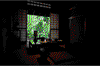

| カメラ紀行 文学の風景をゆく (PHPエル新書) | |
| 小松健一 | |
| PHP研究所 (2003) | |
カメラ紀行
文学の風景をゆく
小松健一
・釧路 さいはての町の恋心――石川啄木
・札幌 詩人の住むべき北都――有島武郎／石川啄木
・小樽 自由の空気の名残――小林多喜二／石川啄木／伊藤整
・函館 新しい運命への扉――亀井勝一郎／小林多喜二／石川啄木
・津軽 本州の袋小路――太宰治
・三沢 はつさんとの約束――寺山修司
・岩手 イーハトーヴを巡るとき――宮沢賢治
・盛岡 面影はいつまでも若く――石川啄木／野村胡堂／金田一京助
・渋民 ふるさとを思うこころ――石川啄木
・三陸海岸 浄土に注ぐ寂光――林芙美子／柳田國男／宮沢賢治／石川啄木
・陸前高田 津波に流された歌碑――松尾芭蕉／高浜虚子／土井晩翠／石川啄木／金田一京助
・仙台 悲秋の風、荒城の月――土井晩翠／島崎藤村
・酒田 実りの国のエネルギー――松尾芭蕉／齋藤茂吉
・大石田 わらじを履いた茂吉――齋藤茂吉／松尾芭蕉
・裏磐梯 モノトーンの静寂――高村光太郎
・郡山 安積野の秋の陽――宮本百合子
・前橋 朔太郎が撮った写真――萩原朔太郎
・群馬・原町 文明のクレソン――土屋文明
・暮坂峠 変わりゆく枯野の旅――若山牧水
・神楽坂 紅葉が食べた蕗――尾崎紅葉／泉鏡花／夏目漱石／石川啄木
・東京・竜泉界隈 おとりさまのどよめき――樋口一葉
・千駄木 テエベス百門の大都――森鴎外／高村光太郎／永井荷風／夏目漱石
・落合 放浪の果ての終の住処――林芙美子
・三鷹 リベラリストの精神――山本有三／太宰治
・沼津 牧水の盃――若山牧水／井上靖
・修善寺 山の端を焦がす花火――夏目漱石
・天城湯ケ島 闇の中の急流――梶井基次郎／川端康成／宇野千代／三好達治
・新潟 親切すぎる雪――坂口安吾／会津八一
・軽井沢 高原の鯉のあめ煮――堀辰雄／室生犀星／立原道造
・小諸 古城のほとりの独り酒――島崎藤村
・信濃町柏原 一茶の蒔いた種――小林一茶
・木曾路 百年の囲炉裏火――島崎藤村
・金沢 遠きにありて思う故郷――室生犀星／泉鏡花／徳田秋声／島田清次郎
・奈良 「小説の神様」の息づかい――志賀直哉／谷崎潤一郎／武者小路実篤／小林多喜二
・吉野 犬のいない集落の謎――谷崎潤一郎
・熊野 はるか青春への郷愁――佐藤春夫
・堺 浪漫を照らす灯台――与謝野晶子／与謝野鉄幹
・城崎 谷間に響く下駄の音――志賀直哉／島崎藤村／与謝野鉄幹／与謝野晶子／吉井勇
・小豆島 浜風と醤油の匂い――壺井栄／壺井繁治／黒島伝治
・高松 百舌坂の百舌博士――菊池寛
・松山 春や昔の城下町――正岡子規／夏目漱石
・尾道 港にくれば憩いあり――志賀直哉／林芙美子
・広島 夕暮れの平和の鐘――峠三吉／原民喜
・津和野 鴎外愛用の漢方胃腸薬――森鴎外／西周
・山口 詩人としての宣言文――中原中也
・小倉 橋から仰ぐ夕景――森鴎外
・柳川 旅情を誘う調べ――北原白秋
・阿蘇山 百年の不平――草野心平／夏目漱石／三好達治
・熊本 新婚の漱石――夏目漱石／寺田寅彦
・日向 夏草の中の鎮魂歌――若山牧水
・屋久島 秋風のなかの軌条――林芙美子
・那覇 泡盛のしずくにぬれて――山城正忠／与謝野鉄幹／与謝野晶子／石川啄木
宮沢賢治がノートに書きつけたみみずく（宮沢賢治記念館所蔵）
【使用機械・フィルム】
カメラ：ニコンＦ３Ｈ．Ｐ、ブロニカＲＦ６４５、ライカＭ４Ｐ、ニコン28Ｔｉ
レンズ：ニッコール24ミリ、28ミリ、35ミリ、50ミリ、１０５ミリ、24～１２０ミリ、マクロニッコール50ミリ、ズミクロンＭ35ミリ、ゼンザノンＲＦ４５ミリ、ＲＦ65ミリ、ＲＦ１００ミリ、シグマズームＥＸ20～40ミリ、24～70ミリ、70～３００ミリマクロ、シグママクロ１０５ミリ、トキナーＡＴ-Ｘ80～２００ミリ
三 脚：ハスキー、ジッツオ
フィルター：ＵＶ、スカイライト
フィルム：コダクローム64プロ、フジクロームプロビア１００Ｆプロ、エクタクロームＥ-２２０ＶＳプロ
第一章 北へ
――木枯をゆく
【釧路】
さいはての町の恋心
――石川啄木
石川啄木（一八八六～一九一二年）は老いた母と妻子を残し、独り終着駅の釧路に着いた。一九〇八年（明治四十一）一月二十一日の夜九時半。雪が一五センチほど積もっていた。
「さいはての駅に下り立ち
雪あかり
さびしき町にあゆみ入りにき―」
その時を後に回想して詠んだこの一首には、啄木の心境がたくみに表現されている。
啄木が『釧路新聞』の記者として活躍した当時の釧路は、釧路―滝川間の鉄道が全線開通したばかりだったが、人口は一万八千、四千戸と東北海道では急成長の町であった。
もともと釧路は開拓時代より漁場として栄え、日露戦争後の経済発展の気運にのり、漁業、石炭産業、パルプ産業など今日の釧路地方の基幹産業の原型が形づくられつつあった。
駅舎を出た啄木が現在の釧路市役所の裏の通りを雪を踏みしめながら北大通りに出て、「歩いて、幣舞橋といふを渡つた」と日記に書いた橋は初代のもの。旧釧路川河口にかかる美しい形の木橋で、長さ二〇五メートル、幅四・二メートルという北海道随一の長さを誇っていた。
現在の幣舞橋は五代目。道内出身で函館や釧路の啄木像を制作している本郷新をはじめ、日本を代表する彫刻家、佐藤忠良、船越保武、柳原義達の制作になる女性像『道東の四季』を配したしゃれた橋に生まれ変わった。釧路は霧の町として知られているが、釧路湿原から湧き出た釧路川が太平洋にぶつかるときの温度差によって生じるといわれる濃霧は、この幣舞橋周辺が一番ドラマチックな光景となる。
最近はこの霧を利用して夏におこなわれている「霧フェスティバル」という市民参加の祭りが知られるようになった。
長いこと冷害や出漁不可に悩まされてきた濃霧を、逆手にとって観光資源にしてしまう発想を頼もしく思った。
啄木が釧路に滞在したのはわずか七十六日間。啄木の代表的な歌集『一握の砂』（一九一〇年）の中の「忘れがたき人人（一）」に収められた後半の三十二首すべてが釧路時代の歌であることからもわかるが、二十三歳の青年啄木にとって釧路での様々な体験は、実は彼の生涯のなかでも最も充実し、心満たされた時ではなかったろうか。芸者小奴に抱いた淡い恋心もその一つのエピソードである。
現在の釧路には、啄木関係の遺跡は何も残っていない。
一九六一年（昭和三十六）頃まで、煉瓦造りの洋風二階建ての当時の釧路新聞社屋が今の大町二丁目にあったというが、現在は解体されてない。
しかし歌碑は、「しらしらと氷かがやき千鳥なく......」の知人岬の碑をはじめ二十三基ある。
これは啄木のふるさと岩手県渋民村（現・玉山村）に次ぐ数だ。
啄木が釧路にしるした七十六日間の足跡を巡る「石川啄木文学コース」の歌碑や、「くしろ歴史の散歩道」の歌碑など釧路時代の啄木に想いをはせながらゆったりと市内を散策してみるのも楽しい。
火をしたふ虫のごとくに
ともしびの明るき家に
かよひ慣れにき
心通わせた小奴がいた料亭しゃも寅へ啄木はよく通い、深酔いをした。啄木が酔いざましに飲んだという「しゃも寅の井戸」からは、いまもこんこんと地下水が湧き出ている。
小樽運河の朝。左奥の４階建てのビルが多喜二の小説『工場細胞』のモデルとなった北海製罐工場の第３倉庫
24ミリ、Ｆ11、１／１２５秒
函館山からの夜景。左が函館港、右側のカーブを描いている辺りが啄木が好んで訪れた大森浜
80～２００ミリ、Ｆ５・６、１／１秒、三脚
夜明け前から啄木が表現した「突貫する」ような活気にあふれる小樽運河沿いの市場
35ミリ、Ｆ２・８、１／８秒
「しんしんとした幅広き街の......」と啄木が詠んだ札幌の大通り公園の夜景
35ミリ、Ｆ４、４秒、三脚
太宰が３年間過ごした青春の地、弘前のねぶた祭りで。ねぶたはみちのく津軽の短い夏の華
１０５ミリ、Ｆ２・８、１／15秒
本州の袋小路、津軽半島の突端の村、竜飛崎で出会った少女
35ミリ、Ｆ11、１／１２５秒
三沢・市民の森に建つ寺山修二文学碑。寺山が終生飛行機を愛したのは、故郷・三沢が飛行機による世界初の太平洋横断成功の発信地だったからか
35ミリ、Ｆ８、１／60秒
中央詩壇に『あこがれ』をもってデビューした啄木が節子とともに胸ふくらませて人生を歩み出した「新婚の家」の「我が四畳半」
24ミリ、Ｆ４、１／15秒
イーハトーヴ・花巻地方に古くから伝わる鹿踊。賢治はこの伝統芸能を愛し、詩や童話に登場させている
35ミリ、Ｆ11、１／１２５秒
少年啄木がはじめてみた大海原、高田松原の浜は白砂に波が寄せ返していた
24ミリ、Ｆ11、１／１２５秒
宮古の名勝・浄土ケ原。その光景が「さながら極楽浄土のごとし」ということから名づけられたという
24ミリ、Ｆ８、１／60秒
啄木が終生忘れることがなかった故郷・渋民からみた岩手山。稲刈りの終えた田からは籾殻を焼く煙がたなびいていた
80～２００ミリ、Ｆ５・６、１／60秒
若き日の晩翠と藤村が遊んだ青葉城跡に、二人の詩碑が建っている。独眼流と恐れられた初代藩主・伊達政宗の像も近くにある
35ミリ、Ｆ11、１／60秒
庄内・酒田の繁栄をしのばせる山居倉庫。１８９３年（明治26）に完成した山居倉庫周辺の建設事業には本間家も多額の出資をしている
80～２００ミリ、Ｆ８、１／30秒

庄内平野の沃土を作った最上川の流れ
70～３００ミリ、Ｆ11、１／２５０秒
【札幌】
詩人の住むべき北都
――有島武郎／石川啄木
「札幌は自分のための魂の故郷、真理の揺籃地だ」と有島武郎（一八七八～一九二三年）に言わしめた北海道の大地。武郎がはじめてその大地を踏みしめたのは一八九六年（明治二十九）九月であった。その十一年後の九月に札幌の地に入った石川啄木は、この北都の印象を日記に詩人らしい直感で次のように記している。
「札幌は大なる田舎なり、木立の都なり、秋風の郷なり、しめやかなる恋の多くありさうなる都なり、路幅広く人少なく、木は茂りて蔭をなし人は皆ゆるやかに歩めり。アカシヤの街えつを騒がせ、ポプラの葉を裏返して吹く風の冷たさ、朝顔洗ふ水は身に沁みて寒く口に啣めば甘味なし、（中略）札幌は詩人の住むべき地なり、なつかしき地なり静かなる地なり、......」
北海道開拓の第一歩として、石狩平野の一角に札幌の街造りがはじまったのは一八六九年（明治二）、そして七年後には「少年よ！ 大志を抱け」で知られるウィリアム・クラーク博士をアメリカから招き札幌農学校を設立している。クラーク博士のピューリタニズムとデモクラシーの精神は学生らに大きな影響を与え、内村鑑三、新渡戸稲造らのすぐれたクリスチャン思想家を育てている。その太い系譜の中に若き武郎をはじめ、国木田独歩、志賀直哉らがいた。
武郎が訪れた頃の札幌の人口は約七万人。戸数は一万一千を超え、開拓精神あふれた活気ある街だった。武郎も自由で大陸的な雰囲気の風土にひかれたのであろう。
十八歳の札幌農学校時代から、途中アメリカ留学などの四年間余りを除いて、東北帝国大学農科大学（現・北海道大学）で教鞭をとった丸十四年間、三十六歳で上京するまで武郎は札幌に身を置いていた。そして実によく住まいを変えている。最初の、母方の親戚である新渡戸稲造方の寄宿からはじまって十回の引っ越しである。現在、武郎が暮らした家二棟が札幌に残っている。一棟は「北海道開拓の村」（白石区野幌に移築復元されている、六番目に住んだ「上白石の家」）。もう一棟は「札幌芸術の森」（南区常盤に移築された九番目の「北十二条西三丁目」の家）だ。「開拓の村」を訪ねてみたが、当時の駅舎、新聞社、写真館、商店などがあり、明治時代の北海道にタイムスリップしたようなおもしろさがあった。
「北海道の冬は空まで逼つてゐた。蝦夷富士といはれるマツカリヌプリの麓に続く胆振の大草原を、日本海から内浦湾に吹きぬける西風が、打ち寄せる紆濤のやうに跡から跡から吹き払つて行つた」
有島の代表作『カインの末裔』（一九一七年）は、有島家の農場の小作人だった実在の人物をモデルにして、当時の北海道の荒涼とした風土と農民の生活実態をリアルに描くことに成功した作品だろう。それは正に武郎の苦悩する思いでもあった。厳しい地主制、戦争への暗い影が漂いはじめたあの時代に、農民たちに「相互扶助」の精神を説き、無償で農地解放をするということは余程の決意が必要であったと思う。その舞台となった農場は現在、札幌から車で二時間ほど、羊蹄山がそびえるニセコ町にある。
三年間のアメリカ留学を終え、帰国した武郎が母校の英語講師として再び札幌に着任したのは一九〇八年（明治四十一）一月六日。その同じ月の十九日、小樽に家族を残したまま、さいはての釧路へと向かう石川啄木が、車窓から札幌の町を見つめつつ通過している。
【小樽】
自由の空気の名残
――小林多喜二／石川啄木／伊藤整
小樽とはアイヌ語で「オタルナイ」、砂ばかり続いているところという意味だという。秋田の現・大館市で生まれた小林多喜二（一九〇三～三三年）が一九〇七年（明治四十）、四歳のとき一家で移住してきた頃の小樽は、北海道開拓の拠点として道内一の経済都市であり、北のウォール街と呼ばれた金融の街であった。
北海道初の鉄道が、札幌と小樽間に一八八〇年（明治十三）に開通し、それは全国でも東京―横浜、大阪―神戸に続く三番目のものだった。石炭、木材などの資源を運ぶ船と、鰊漁をはじめとする北洋漁業の港町でもあった。
かつてヨーロッパの人々が自由の新天地を求めてアメリカ大陸に渡ったように、本土の人々は広大な北海道に希望を持って渡ってきた時代で、小樽の街は、はじけるような活気にあふれていた。
多喜二とわずか二十日間余りであるが同じ小樽の地に滞在していた石川啄木は、『小樽日報』創刊号に小樽の印象を次のように書いている。「小樽に来て初めて真に新開地的な、真に植民的精神の溢るる男らしい活動を見た。男らしい活動が風を起こす。その風が即ち自由の空気である」と。現在の小樽の街には当時の賑わいはない。
しかし、小樽にはいまも運河や倉庫、多喜二が勤めた旧・北海道拓殖銀行小樽支店の建物をはじめ街のあちこちに石造建築が残っていて、当時の佇まいを感じとることができる。
波止場から一気にせり上がった街を見おろすようなかっこうで、多喜二や伊藤整たちが学んだ小樽高商（現・小樽商科大学）が建っている。
二年生に進級した多喜二は、俳人・高浜虚子の長男、高浜年尾とともに「交友会会誌」の編集委員になる。一級後輩で同郷の大館出身の佐々木妙二にも声をかけて編集スタッフに迎えている。佐々木は整と同級で、後年、医師としての道を歩み歌人としてもすぐれた作品を残している。
佐々木八十歳の時に刊行した歌集『生』のなかに「郷愁」として小樽の歌五首が入っている。その一首。
「汚水の運河／煤けた石造倉庫群／夜霧の底に灯ることなし」
晩年に何度かお会いしたが「いまの私があり、歌を詠み続けられてきたのは多喜二との出会いがあったからだ」と語っていたのが忘れられない。整もまたその代表作『若い詩人の肖像』の中に高商時代の多喜二のことを書いている。
その高商前の地獄坂を右に折れて、船見坂を登りつめていくと、市内を一望できる旭展望台に着く。ここに北海道出身の彫刻家・本郷新のブロンズの青年像と北斗七星を配したレンガ造りの多喜二の文学碑が建っている。
「冬が近くなると、ぼくはそのなつかしい国のことを考えて、深い感動に捉えられている。そこには運河と倉庫と税関と桟橋がある。そこでは人は重っ苦しい空の下をどれも背をまげて歩いている。ぼくは何処を歩いていようが、どの人をも知っている。
赤い断層を処々に見せている階段のように山にせり上がっている街を、ぼくはどんなに愛しているか分からない」
碑にはめこまれた文章は、多喜二が獄中から友人の村山籌子へ宛てた手紙の一節だ。小樽に寄せる多喜二の思いと小樽の冬の風土をよく表現していると思う。
多喜二の小説『工場細胞』のモデルとして描かれている北海製罐工場の第三倉庫のある運河あたりを彷徨していると多喜二が全力で愛した田口タキ宛ての手紙の書き出し「闇があるから光がある」という言葉が聞こえてくるような気がするのである。

小樽の冬は雪も多く寒い。午前３時から動き出す隣友市場で出会った人
35ミリ、Ｆ５・６、１／30秒
【函館】
新しい運命への扉
――亀井勝一郎／小林多喜二／石川啄木
函館で生まれた亀井勝一郎は、北海道文学とは「札幌のピューリタニズム、小樽のリアリズム、函館のロマンティシズム」の三要素から成っているといっている。おもしろい指摘だと思う。
函館を舞台にした作品には、亀井の『函館八景』、小林多喜二の『蟹工船』などの名作があるが、漂泊の詩人として、函館にわずか三カ月余り滞在した石川啄木（一八八六～一九一二年）の「ハコダテの歌」の一群はとくに光を放っている。
「船に酔ひてやさしくなれる／いもうとの眼見ゆ／津軽の海を思へば」
啄木が妻子を盛岡に、老母を渋民に残し、妹の光子を連れ津軽海峡を越えたのは、一九〇七年（明治四十）五月四日であった。その心境をその日の日記に記している。
「夜九時半頃、青森に着き、ただちに陸奥丸に乗り込みぬ。（中略）夜は深く、青森市の電燈のみ眠た気に花めきて、海は黒し」
新しい運命を切り開くべく、北の大地の玄関口、函館への第一歩を踏み出したのである。
開拓時代のエネルギーを連想させる函館駅隣の朝市で腹ごしらえをしてから市電に乗り込む。駅前から十五分ほど揺られていると谷地頭という終点に着く。なだらかな坂道を上っていくと眼下には青々とした海が広がってくる。立待岬に続く一本の道だ。丘の中腹にクッキリと建っているのが啄木一族の墓である。
私は函館に来ると必ず啄木や節子の眠るこの地を訪れる。啄木を生涯支えた宮崎郁雨の発案で樺太（現・サハリン）の旧日露国境の標石を模して作ったという墓碑は、離れ離れになっていた家族がわずかだが一緒に暮らした青柳町や啄木が好きだった大森浜と向かい合っている。墓碑の正面に刻まれた、
「東海の／小島の磯の／白砂に／われ泣きぬれて／蟹とたはむる」
の歌にふさわしく、辺りは海鳴りだけの世界だ。
啄木一族の墓の後ろに見守るように郁雨の墓があり、その隣に啄木を崇拝し、その文学に傾倒した郷土の文学青年、砂山影二の歌碑がある。
「わがいのち／この海峡の浪の間に／消ゆる日を思ふ――岬に立ちて」
人生に懐疑的だった影二は自身の歌の通り、青函連絡船から深夜の津軽海峡に、二十歳の生命を投じている。
函館の啄木ゆかりの地は、海霧にけぶる立待岬の他にも、苜蓿社の同人らと文学や恋を論じ、家族と安息の日々を送った青柳町周辺、『一握の砂』の「忘れがたき人人」の章の中で、
「君に似し姿を街に見る時の／こころ躍りを／あはれと思へ」
などと愛惜をこめて詠いあげた橘智恵子と出会った弥生小学校、啄木関係の第一級の資料を展示、収蔵してある函館市文学館などたくさんある。
そして啄木が通った大森浜には現在、啄木小公園ができ、西条八十が啄木に捧げた詩の碑と本郷新制作の啄木の座像が建っている。その下の海岸は埋め立てられ、はまなすの咲き乱れていた砂浜は消えていた。津軽海峡の波が、わずかに残る浜にせわしく寄せ返しているのみである。
【津軽】
本州の袋小路
――太宰治
太宰治（一九〇九～四八年）の故郷、津軽への旅は、短い夏を謳歌するように燃える季節がよい。青森から竜飛崎へ向かって津軽半島の東海岸をまっすぐ北上した。太宰が『津軽』（一九四四年）で旅したコースだ。蟹田、三廐、そして竜飛へと車を走らせる。フロントガラスに蒼く凪いだ陸奥湾が広がる。岩山を切り開いた道の片側に、へばりつくように低い屋根をのせた家が軒を並べ、うみねこの群れは紺碧の空を舞う。
若き日に、太宰の作品『津軽』に魅せられて冬のこの地方を訪ねたことがある。三廐から竜飛までの定期バスの客は、私だけだった。まだ昼を少し過ぎた時刻だというのに、地表から湧きあがってくる地吹雪で夕方のように暗く、辺りは黒々とした岩にくだける波の音が響くだけ。灰色の別世界に吸いこまれていくようだった記憶が残っている。
「ここは、本州の袋小路だ。読者も銘肌せよ。諸君が北に向つて歩いてゐる時、その路をどこまでも、さかのぼり、さかのぼり行けば、必ずこの外ケ浜街道に到り、路がいよいよ狭くなり、さらにさかのぼれば、すぽりとこの鶏小舎に似た不思議な世界に落ち込み、そこに於いて諸君の路は全く尽きるのである」
と太宰が『津軽』の中に記した文章が実感できる。そして本当に道はその『津軽』の一節が刻んである文学碑の前で尽きるのだ。津軽海峡からの烈風をまともに受けながら、荒涼とした海岸を歩いた。人生をどう生きていくのか悩んでいた。
あの頃の自分のことが昨日のことのように甦ってくる。
竜飛は青函トンネルの建設工事以後、飲食店などが次々にでき、一時は景気がよかったというが、いまでは周囲の風景に不釣り合いな飲み屋の看板がカタカタと風に鳴っているだけだ。
本来の静かな漁港、竜飛に戻ったということだろうか。そのことにほっとするのは旅人のエゴイズムであろうか。
小泊には竜飛から山越えして入った。小泊は『津軽』のクライマックスで、太宰の幼年時代の乳母、「悲しい育ての親」たけと三十年ぶりに再会を果たす場所である。太宰をして「私はこの時、生まれてはじめて心の平和を体験した」と書かせたたけは、津島家（太宰の生家）に仕えた小作農の娘だった。豪農であった生家と、そこに生まれた宿命を怨みながらも、津軽に生きる人々を真に愛した太宰の本質を見るような気がする。
いまの小泊には当時をしのぶものは何も残っていない。が、夕方から集魚灯を煌々と灯して出漁する漁船、それに乗る夫を見送る妻、低く旋回するうみねこ、子どもたちの遊び声、そして一夜干しのイカを炭火で焼く煙と匂いが小さな港に漂う。
太宰が訪ねた五十五年前とはずいぶんとちがうだろうが、ふるさとに帰ってきたような安堵感に包まれる。
十三湖を走り抜けて、金木町にある太宰の生家へ行ってみた。生家は、太宰の没後五十年の一九九八年春、太宰治記念館「斜陽館」となった。高く張り巡らされた赤レンガの壁と、一階、二階合わせて二百五十四坪という広い造りの建物は、明治、大正、昭和、平成と四つの時代を耐えてきた。津軽地方屈指の大地主・津島家の唯一の残像であろうか。
【三沢】
はつさんとの約束
――寺山修司
「マッチ擦るつかのま海に霧ふかし 身捨つるほどの祖国はありや」
寺山修司（一九三五～八三年）二十一歳の時の『祖国喪失』の中の一首だが、この歌は一九六〇年代から七〇年代にかけて青春を送った若者たちの心に、ひとつのバイブルとして刻まれていたのではあるまいか。私もその一人であった。
晩年の寺山は、詩歌だけではあきたらず、戯曲、演劇評論、映画評論、演出、映画監督、小説......と、自由に仕事の領域を広げていった。そしてどの分野でも一級の作品を残している。
寺山が東京・渋谷のＮＨＫ裏にあった木造二階建てのアパート松風荘に十五年間住んでいた頃、偶然にも私はその目と鼻の先に十年間勤めていた。だから毎日のようにそのアパートの前を通っていたし、寺山がよく通っていた喫茶店も焼き鳥屋も鮨屋も知っていた。
高尾山麓の満開の桜に囲まれるように建っていた寺山の墓にお参りした。その足で遺品を見せてもらうために母親のはつさんを訪ねたことがあった。その頃、はつさんは寺山が好きだった犬タロー（三代目）と世田谷の三軒茶屋の奥まったところで暮らしていた。
ひどい風邪にもかかわらず、「修ちゃんの墓参りをしてきてくれたから」と案内をしてくれた。きれいに遺品が整理してある二階の部屋の正面に、寺山の微笑んだ写真が額に入れて飾ってあった。そのガラスにはつさんの顔が映った。目元が重なるぐらい似ていた。思わず「修司さんはお母さんにそっくりですね」と言うと、ガラスに映ったはつさんの顔も微笑んだ。
翌朝、はつさんの「三沢に建った修ちゃんの歌碑を見てきてほしい」という思いを胸に、青森県三沢市へ向かった。三沢は異常な寒波の襲来で横なぐりの吹雪だった。寺山の郷里にふさわしい天候のようでうれしかった。
空港には、寺山の小・中学校の同級生だった下久保作之祐さんと三沢市中央公民館館長の小比類巻文幸さんが待っていてくれた。
さっそくゆかりの地を案内してもらった。古間木小学校、母子で暮らした寺横町、小学校六年の時に遠足に行った三川目海岸、小川原湖、『田園に死す』の舞台となっている栗山近くの墓地、父・八郎の眠る寺、米軍キャンプ......、そして小田内沼が一望できる市民の森の丘に建つ寺山修司の歌碑公園。
はつさんとの約束の場所である。カメラを覗く目が曇った。碑の選歌は谷川俊太郎ら、ブロンズ制作・設計は渋谷の天井桟敷館や寺山の墓と同じくデザイナーの粟津潔となっている。
八甲田山系から吹きつける雪まじりの風の中で、下久保さんは、
「碑の建立の中心になったのは修ちゃんの同級生たちなんです。私たちに残された仕事は、修ちゃんの遺志を継いだ資料館を故郷・三沢に建てることだと思っています」
と寺山に誓うかのように碑に向かって語った。
一九九七年七月。下久保さんたち寺山の同級生の熱い思いはようやく実現した。はつさんが大切に保存していた遺品などが収蔵・展示された「寺山修司記念館」が三沢の歌碑公園に隣接した地にオープンしたのである。
【岩手】
イーハトーヴを巡るとき
――宮沢賢治
「イーハトーヴは一つの地名である。強て、その地点を求むるならばそれは、大小クラウスたちの耕してゐた、野原や、少女アリスが辿つた鏡の国と同じ世界の中、テパーンタール砂漠の遥かな北東、イヴン王国の遠い東と考へられる。実にこれは著者の心象中に、この様な情景をもつて実在したドリームランドとしての日本岩手県である。......」
宮沢賢治（一八九六～一九三三年）は、生前に出版した唯一の童話集『注文の多い料理店』（一九二四年）の広告チラシの中でイーハトーヴについて自らこのように紹介している。
賢治がエスペラント語で、イーハトーヴと呼んだ郷里・岩手県。彼は自作の詩や童話の中にちりばめるように、ユニークな地名や題名を書き記した。そこにはいまだに賢治の青春のドリームランド、メルヘンの世界が色濃く残っている。賢治は三十七年間という短い生涯のうちで、その多くは生まれ育った花巻で暮らしたが、十一年間の学生時代をモーリオこと盛岡で過ごした。盛岡駅から秋田方面へ車で三十分ほど行くと小岩井農場がある。
「......みちはまつ黒の腐植土で 雨あがりだし弾力もある 馬はピンと耳を立て その端は向ふの青い光に尖り いかにもきさくに馳けて行く......」
と、賢治が詠んだ八百二十七行からなる最も長い詩『小岩井農場』の舞台である。
この農場は一八九一年（明治二十四）に、日本ではじめて本格的な農場として創設された。カラマツ、シラカバ、コブシなどの樹林のトンネルを抜けると、緑の野に牛や羊が放たれ、ゆっくりと草を食んでいる。背後には岩手山の美しい稜線が広がり、その壮大な牧場からのパノラマは異国情緒を漂わせている。
その風景の中でも核をなしている岩手山麓周辺には、賢治が森と人間との付き合いをテーマに描いた作品のタイトルそのままの地名、狼森、笊森、盗森がある。鬼越池、姥屋敷、一本木原、鞍掛山、焼走り溶岩流......、みんな賢治ワールドの魅力的な地名だ。
みちのくの霊峰岩手山（標高二〇三八メートル）に賢治は三十回を超える登山をしている。そしてたどり着いたのが神々の住処としての岩手山であった。
賢治が岩手山を仏教の聖山カイラスに、その火口湖を聖湖になぞらえていたのには、僧侶・河口慧海の『西蔵旅行記』（一九〇四年刊）が大きな影響を与えているだろう。慧海が一度目のチベット行を果たして、七年ぶりに帰国した翌年発行したものだ。その翌年、慧海は、二度目のチベット行のために日本を旅立っている。
賢治が突然、岩手山行を始めたのは一九〇九年（明治四十二）、盛岡中学校へ入学してから。慧海の仏教の一原典を求めての大冒険記は当時、様々な話題となっていたので、多感な少年の心に大きなロマンを育んだことは想像に難くない。
ハナムキーヤこと花巻には、宮沢賢治記念館、花巻農業高校内に移築保存されている羅須地人協会、イギリス海岸など賢治ゆかりの場所が多い。
また、周りには仙人峠、種山高原、五輪峠、早池峰山、石鳥谷、鉛温泉、獅子ケ鼻など作品の舞台となった土地が広がっている。
山や野や川。風や、木や、花、そして星や月。イーハトーヴを巡るとき、そんな自然の中に、賢治が未来に伝えたかった作品の世界、いのちの叫びを聴きとることができる。
【盛岡】
面影はいつまでも若く
――石川啄木／野村胡堂／金田一京助
石川啄木が渋民尋常小学校を首席で卒業し、盛岡高等小学校を経て岩手県立盛岡中学校へ入学したのは一八九八年（明治三十一）、十三歳の春であった。
当時の学内には、開校以来の校是としての「立志」とともに自由な気風がみなぎっていた。啄木のここでの四年半は、良き友人たちとの出会い、文学への開眼、そして後に妻になる堀合節子との初恋が芽生えた時期だった。
啄木が在籍した明治三十年代の盛岡中学は、後年、日本の政財界、文芸界などをリードする逸材を次々に輩出した「盛中ルネサンス」の時代にあたる。
一年先輩に野村胡堂（作家）、二年先輩に金田一京助（言語学者）、さらに上級に米内光政（総理大臣）、十一年後には宮沢賢治もこの門をくぐっている。
啄木はそうした先輩たちから多くの影響を受け、刺激されて、しだいに文学熱を高めていった。
「盛岡の中学校の／露台の／欄干に最一度我を倚らしめ」
と啄木が詠んだ当時をしのぶ建物は、百年の歳月の流れとともにすでに何も残っていない。
啄木は『岩手日報』に連載した「百回通信」の中で、
「時に十四歳。漸く悪戯の味を知りて、友を侮り、師を恐れず。時に教室の窓より、又は其背後の扉より脱れ出でて、独り古城跡の草に眠る」
と盛岡城跡を回想した。苔むした城壁は当時の佇まいのまま旅人を迎えてくれる。
盛岡城は南部藩二十万石の居城であり、別名不来方城とも呼ばれている。老松の並ぶ石畳を上っていくと、市内を見わたせる二の丸に出る。そこに、
「不来方のお城の草に寝ころびて／空に吸はれし／十五の心」
と刻まれた歌碑が建っている。啄木を生涯にわたり物心両面で支えた金田一京助の揮毫である。
啄木生誕七十年を記念して建立された碑だが、その除幕式に参加した金田一は、遥かな友のことを想い涙したという。
「わかくして別かれしひとのいつまでもわかやかに来て面影に立つ」
金田一の啄木を偲んだ歌が胸に沁みる。
啄木と節子が新しい生活を始めた「新婚の家」は、九十数年の風雪に耐えて帷子小路八番戸（現・中央通三丁目）に残っている。石川啄木の表札のかかる戸を開け、中に入ると啄木が「我が四畳半」に書いた「古格子附いたる窓は、雨雲色に燻りたる紙障子四枚を立てゝ、中の二枚に硝子嵌まり、日夕庭の青葉の影を宿して曇らず」のままである。
五人家族の石川家の中で二人に与えられた部屋は、北側の奥のわずか四畳半であった。それでも啄木は、『あこがれ』を上梓し、天才詩人と称され、文学への初志を貫こうとしていた。節子は「吾望みすべて君なり」と、新進浪漫詩人の夫にすべてを託していたのである。
啄木も節子も時に二十歳であった。
【渋民】
ふるさとを思うこころ
――石川啄木
石川啄木（一八八六～一九一二年）の故郷、岩手県渋民（現・玉山村）を考えるとき、必ずと言ってよいほど思い浮かぶのは、啄木が『ローマ字日記』に記した次の言葉である。
「渋民！ 忘れんとして忘れ得ぬのは渋民だ！ 渋民！ 渋民！ 我を育て、そして迫害した渋民！」
いまは函館の立待岬に静かに眠っている啄木の、故郷へ寄せる思いのこの二律背反は、いったいどこから生まれたのだろうか。
啄木一家にとって、父・一禎の宝徳寺住職の罷免などによって「石をもて追はるるごとく」出ざるを得なかった故郷、「病のごと思郷のこころ湧」き、忘れることのできなかった故郷。そして二度と足を踏み入れることのなかった故郷。
この地を訪れる時、列車がいつも盛岡の街に近づくと、
「汽車の窓
はるかに北にふるさとの山見え来れば
襟を正すも」
の歌が浮かぶ。
啄木が生涯変えることのなかった故郷の自然に対する深い思慕に胸を打たれる。
渋民は、東北本線で盛岡から北へ二十分ばかり行った寒村である。その昔、宿場町として栄えた街道にわずかに雰囲気を残しているだけだ。
しかし、北海道から沖縄まで百五十基を超す啄木歌碑の第一号碑として知られる北上川河畔の、
「やはらかに柳あをめる
北上の岸辺目に見ゆ
泣けとごとくに」
の碑の前に立つと、西にみちのくの霊峰・岩手山、東にはしなやかに裾野を拡げる北上山系の姫神山がそびえ、その真ん中を貫流するように北上川が流れている。そして村人たちの訛のある優しい語り口......。この北の大地のすばらしい風土は、啄木が生まれ育った時代と基本的には変わっていないだろう。
この空間こそが、啄木が終生抱き続けていた「ふるさと」像であり、それはまた、日本人が抱く普遍的なふるさとへのイメージに重なるものがあると思える。
「やはらかに柳あをめる」の歌碑の裏側には「大正十一年四月十三日無名青年の徒之を建つ」と刻まれている。
建立当時から、時の権力によって様々な迫害を加えられたというが、戦時中は歌碑へ近づくことはおろか、啄木の歌を口にすることさえタブーだったと村の老人たちは話す。
一九八六年（昭和六十一）、啄木の生誕百年を記念し、全国のファンたちに支えられて現在の石川啄木記念館の新館が完成した。それは六十四年前、幾多の困難に屈せず啄木の精神を継承しようとした「無名青年」たちの熱い思いを引き継いだものであった。
記念館の敷地内には、啄木が学び、自ら教鞭をとった旧渋民小学校校舎と、一家が二階に間借りして、小説『雲は天才である』（一九〇六年）などを執筆した斉藤家の母屋が移築されている。
その裏手の細い道を辿ると、啄木が一歳から幼少期を送った万年山・宝徳寺に行き着く。
境内には啄木が歌にも詠んでいるひばの巨木が天を衝いている。これらの周辺は啄木の故郷を味わうには欠かすことのできないエリアであろう。
何よりも豊かな自然と、それに伴う暮らしぶりがこの地方には脈々と息づいていることが、訪れる旅人をほっとさせてくれるのである。
啄木が学び、そして「日本一の代用教員」を自負して教壇に立った旧渋民小学校で
１０５ミリ、Ｆ４、１／30秒
【三陸海岸】
浄土に注ぐ寂光
――林芙美子／柳田國男／宮沢賢治／石川啄木
鉄のまち釜石にも林芙美子の小説『波濤』の碑をはじめ、多くの文学碑がある。市の北方、鵜住居の常楽寺境内にある柳田國男文学碑を訪ねた。柳田國男の代表作『遠野物語』の中に釜石の民話は二十数編収められている。柳田は一九二〇年（大正九）に釜石を訪れている。取材の折々に書きつけていた柳田の豆手帳にはこんなくだりがある。
「鵜住居の浄（常）楽寺は陰鬱なる口碑に富んだ寺ださうだが、自分は偶然その本堂の前に立つて、しをらしいこの土地の風習を見た」
三百年以上の歴史を持つ曹洞宗・常楽寺の裏山の麓にひっそりとその碑はあった。碑文は柳田らしく、みちのくを美しい文章で綴った「北の野の緑」の一節である。辺りはブナとツツジに囲まれて、春から初夏にかけては、さぞや柳田好みの風景であろうと思った。
宮古も多くの文学者との関わりのあった町である。宮沢賢治は一九一七年（大正六）、二五年（大正十四）の二回、ともに発動機船で宮古に上陸している。最初に訪れたのは盛岡高等農林学校時代の二十一歳の時、花巻―釜石間が軽便鉄道で結ばれたのを機に、当時の花巻実業家有志「東海岸視察団」のメンバーの一員として父親の代理で参加した。しかし、宮古に着くと宴会に明け暮れる視察団と離れ単独行をとる。帰りも一人、船に乗らず早池峰山麓の小国峠を越え、遠野をめぐって花巻に戻った。
宮古山常安寺七世の霊鏡竜湖和尚が「さながら極楽浄土のごとし」と感嘆したことから名づけられたという宮古の名勝・浄土ケ浜。賢治はここで夜を明かし、詩心を触発され、明け方までに次々と短歌をものしている。
うるはしの海のビロード昆布らは寂光のはまに敷かれひかりぬ 宮沢賢治
この歌碑が生誕百年を記念して一九九六年、浄土ケ浜に建立された。
石川啄木と宮古の関わりも浅からぬものがあり、その不思議さに驚いた。幾人もの宮古衆が、生意気で自信家でもあった啄木を陰ながら支えていた。
函館で出会った「宮古の松本艦長」こと松本精一から始まって、札幌の『北門新報』、創刊したばかりの『小樽日報』へと啄木を誘い一緒に働いた先輩の硬派記者、小国露堂も宮古出身だ。さらに釧路での啄木の生活を精神的な面で支えた芸者・小奴の姉芸者小蝶、盛岡中学時代のユニオン会のメンバー・伊東圭一郎も宮古周辺の生まれである。
啄木が上京を決意し、釧路を酒田川丸で出港して宮古へ立ち寄ったのは一九〇八年（明治四十一）四月六日のことだった。上陸してまず訪ねたのも盛岡中学の先輩、医師の道又金吾だった。この日の啄木の日記全文を記した碑が宮古港を望む漁協ビル広場に建っている。
「街は古風な、沈んだ黴の生えた様な空気に充ちて、料理屋と遊女屋が軒を並べて居る。街上を行くものは大抵白粉を厚く塗つた抜衣紋の女である。......隣の一間では、十一許りの女の児が三味線を習つて居た」
わずか七時間余りの宮古滞在にもかかわらず、当時の花街・鍬ケ崎の様子や風俗を記者・啄木の目でリアルに捉えている。
【陸前高田】
津波に流された歌碑
――松尾芭蕉／高浜虚子／土井晩翠／石川啄木／金田一京助
太平洋の荒波洗う三陸のリアス式海岸沿いに五十基を超える文学碑がある。陸前高田から宮古まで、南から北へ辿ってみた。
岩手県一ノ関に着いた時は、横なぐりの雪。大船渡線に乗り換え、雪景色の中を一時間余り走る。千廐が深い雪だったのは覚えているが、少し眠ったらしい。気がついたら雪はなく、緑の雑木林の向こうに青々とした海が車窓いっぱいにあった。
陸前高田では松尾芭蕉、高浜虚子、土井晩翠らの文学碑が有名だが、地元の人たちに身近な存在として親しまれているのは、やはり石川啄木とその歌碑であろう。
一九〇〇年（明治三十三）の夏、盛岡中学三年だった啄木は、担任の高田小一郎教諭に引率され、級友数人と修学旅行で高田を訪れている。北上山系の山懐に抱かれた渋民出身の啄木にとっては、おそらくはじめて見る大海原であったであろう。どこまでも続く白い砂浜、緑濃い松原は、中学生だった啄木の目にどれほど新鮮に映ったことだろうか。
同行した級友の一人、船越金五郎の日記には、その旅の感動が記されていた。船越の日記の内容が後年ラジオ放送されるや、啄木の歌碑を高田松原にという気運が盛り上がり、船越の揮毫で一九五七年に碑が建立された。
「いのちなき砂のかなしさよ さらさらと 握れば指のあひだより落つ 石川啄木」
しかし、船越の書いた碑文が啄木の歌稿と比べると漢字と平仮名の使い方が違っており、彫り直すかどうか論争が起きた。そのさなか、建立後わずか三年、三陸地方を襲ったチリ地震津波でこの歌碑は流失したのである。「受難の碑」と呼ばれたこの碑は、その後土砂の中から発見されたが、元の場所に戻ることなく、市内の氷上神社の参道に移された。現在、高田松原に建っているのは啄木の親友、国文学者の金田一京助が揮毫した碑である。
高田を訪れるならぜひこの二つの歌碑を見てほしい。それぞれの啄木に対する深い思いを感じることができるからだ。
もちろんこの短歌が高田松原の白砂の海岸をストレートにイメージして詠まれたわけではない。この歌や「東海の小島の磯の白砂に......」をはじめとした歌集『一握の砂』の中でも絶唱といわれる「我を愛する歌」巻頭十首の舞台は、啄木研究の通説では函館の大森浜となっている。
しかし、私は啄木の故郷に近い岩手にある高田松原の白砂に佇んで、もしかしたら啄木はこの高田松原と、漂泊の旅の途中で、安らぎの場として通った大森浜とのイメージを重ね合わせながら、「いのちなき砂の......」などの名歌を詠んだのではあるまいかと思った。多感な少年時代に出会った忘れ得ぬ光景を、心の奥底で発酵させていたのかもしれないと想像したのである。
【仙台】
悲秋の風、荒城の月
――土井晩翠／島崎藤村
杜の都、仙台は日本の新詩体・近代詩発祥の地と言ってもよいかもしれぬ。
漢文体の格調ある詩風の『天地有情』（一八九九年刊）で知られる土井晩翠（一八七一～一九五二年）は、市内の北鍛冶町の旧家に生まれた。一方、近代詩のさきがけともなった島崎藤村の『若菜集』（一八九七年刊）は、仙台に滞在した一八九六年（明治二十九）から一年間、東北学院の教師時代に作ったものであった。二人は明治の詩壇の人気を二分し、「藤晩時代」とも呼ばれた。
その二人の詩碑が、伊達政宗の居城だった青葉城趾にある。眼下には曲折する広瀬川の清流が見え、その向こうに百万都市となったみちのくの大都が広がっていた。
晩翠の碑には、
「春高楼の花の宴 めぐる盃影さして......」
の『荒城の月』の一節が刻まれている。晩翠二十八歳の時の作品で、作曲は「天才作曲家」と呼ばれた滝廉太郎であることはあまりにも有名である。
実は「荒城の月」の碑は仙台の他に、晩翠が第二高等中学に在学していた頃に行った会津若松の鶴ケ城趾、廉太郎の故郷・大分竹田の岡城趾にもある。どちらも訪ねてみたが、一番詩のイメージに合っていると思ったのは、豊後竹田の岡城趾であった。
晩翠忌に仙台を訪ねた時のこと。この詩碑の前で市民らが「荒城の月」の大合唱を行っていた。一世紀を経ても歌い継がれる詩の魅力を思う。
晩翠の碑からさらに南に入ると島崎藤村の「草枕」の詩碑がある。
「心のやどのみやぎ野は 乱れて熱きわが身には......」
と刻まれている。三十連百二十行からなる長編の一節である。
『若菜集』中で二十五歳の藤村は、幾度も仙台行を流離、漂泊の旅のごとく表わしている。しかし、実際の藤村の仙台での生活は、
「新しい自然、新しい太陽、そして新しい青春」「自分の一生の夜明けがそこではじまつて来たやうな心持を味ひました」（『仙台雑詩』）
というものであった。落人のように侘びしい心持ちで辿り着いた杜の都ではあったが、閉ざされ胸にくすぶっていた青春、生命の自覚や官能は、この地で一気に解放され、次々と新しい歌声を起こしていったのであった。
晩翠の代表的な詩「星落秋風五丈原」の舞台となった中国陝西省にある古戦場・五丈原を訪ねたことがある。
「山悲秋の風更けて
陣雲暗し五丈原
零露の文は繁くして
草枯れ馬は肥ゆれども
蜀軍の旗光無く......」
はるか五丈原に佇んで『三国志』の名軍師・諸葛孔明の悲劇的な生涯を歌いあげたこの詩が「荒城の月」と重なった。
【酒田】
実りの国のエネルギー
――松尾芭蕉／齋藤茂吉
松尾芭蕉（一六四四～九四年）は『奥の細道』の序で、
「月日は百代の過客にして、行かふ年も又旅人也。舟の上に生涯をうかべ、馬の口とらへて老をむかふる物は、日々旅にして旅を栖とす」
と俳諧の脱皮をかけた三千里の旅への決意をしたためている。
時に芭蕉四十六歳。門弟たちに見送られて一六八九年（元禄二）三月二十七日、旅立った。上野谷中の花はおぼろに霞んでいた。「行春や鳥啼魚の目は泪」が矢立はじめである。
その後、長旅を続け、酒田のある出羽の国（山形県）へ入ったのは五月十五日、隣の国越後（新潟県）にぬけたのが六月二十七日だから出羽の国には足かけ四十三日滞在している。
奥羽山脈に発した最上川が、奔流となって出羽を巡り、物と情報を自由自在に運びながら庄内の沃土を作りつづけてきた。この大河と海とが出合うのが酒田。その昔からこの町は大坂、江戸、松前と常に外へと扉を開いており、さまざまな人と物が交錯し富を築いてきた。その一端は「本間様にはおよびもせぬが、せめてなりたや殿様に」という庶民の歌に残るが、現存する本間家の旧邸や別荘（本間美術館）、庄内米を貯蔵する山居倉庫などに当時の豪商の繁栄ぶりが示されている。
芭蕉が『奥の細道』で詠んだ
「暑き日を海にいれたり最上川」
の句がイメージできる場所を探して日和山へ登ったことがある。現在の日和山は山というより小高い丘で、日本最古の木造灯台といわれる日和山六角灯台のはるか向こうに、北の海は光っていた。
芭蕉はこの句を当初は「涼しさや海にいれたる最上川」として、酒田で滞在した寺嶋彦助亭で詠んだ。後に『奥の細道』の本文を書くときに改作するのだが、それは、最上川の河口に広がる日本海の落日を見たことによるものだという。
「暑き日を」と改稿しただけで、これだけ壮大な大自然の句となることに驚く。実りの国、庄内の大地の秘めたエネルギーを感動的に表現した句となった。
最上川の中流域、大石田に疎開していた齋藤茂吉も酒田を訪れて、いくつかの歌を残している。茂吉も芭蕉がどこでこの「海にいれたり」の句を作ったのか関心を持ち、探している。自らの眼でその光景を確認したかったのだろう。
現在、日和山公園の中腹あたりに、酒田港に向かって黒御影石の茂吉の歌碑が建っている。
「おほきなる流となればためらはず酒田のうみにそそがむとする 茂吉」
【大石田】
わらじを履いた茂吉
――齋藤茂吉／松尾芭蕉
「吾妻やまに雪かがやけばみちのくの 我が母の国に汽車入りにけり」（『赤光』）
齋藤茂吉（一八八二～一九五三年）の故郷、上山市金瓶を訪れたのは、数日前の初雪がすっかり溶けた小春日和の日だった。
茂吉の生家の守谷家の隣が、後年、養子となった齋藤紀一家の本家。妹・なをの嫁ぎ先でもある。塀続きの隣家には大沢という表札がかかっていた。広い庭には大根、白菜、この地方の特産物の青菜が淡い陽に向かって並べられていた。かたわらで作業していたおじいさんに声をかけた。
大沢秀男さんというこの家の主だった。
「おじいさん、茂吉のこと覚えていますか」
「うーん、親父と同じ歳で親類だ。ここに住んでいた頃のことは知らねえが、疎開してた時や、帰省した時はよく会った。蔵王さ登った時のわらじは、みなわしが作ってやったんだ。茂吉にゃ作れねぇ」
と言って笑った。
そういえば茂吉の写っている蔵王登山の写真を見ると確かにわらじ姿だ。茂吉の亡くなった歳を超えているという大沢さんが、雪の光る蔵王山の方をまぶしそうに見つめた。
翌日、最上川を下って大石田町へ行ってみた。大石田は戦時中、聖戦詠を作りつづけてきた茂吉が、昭和二十一年の冬、家族と離れ、疎開した地である。
大石田の人びとは「山川も慟哭するような敗戦」に打ちひしがれていた茂吉を迎えた。
いま訪れてみても茂吉が愛した町の面影がそこかしこに感じられて、
「しづかなる秋の光となりにけりわれの起臥せる大石田の恩」（『白き山』）
と詠んだ茂吉の心境がわかる。
町立歴史民俗資料館をのぞくと茂吉の資料や足跡が整理されていて、町ぐるみで茂吉の精神を継承しようとしている意が伝わってきた。
この地での平穏な三年間の暮らしは、敗戦によってもたらされた茂吉の痛みを癒したことだろう。だからこそ晩年の絶唱ともいえる歌集『白き山』の八百二十四首を詠いあげることができたのではあるまいか。
大石田を貫流する最上川の風景は、その上流から河口の酒田に至るなかでも、とりわけ美しい。スケールが大きく、それでいてどことなく寂しさを漂わせている。
最上川は、日本三急流のひとつだけあって川幅いっぱいに水量があふれんばかりだ。波は決して激しくはないが水面が盛り上がってきては落ちるその落差、速度を見ていると吸いこまれていきそうな錯覚すら起こす。
松尾芭蕉の有名な句に、
「五月雨を集めて早し最上川」
があるが、この句は、大石田で詠んだものだ。芭蕉はこの句の中七を当初「集めてすゞし」としていたが、舟下りをして、「涼し」などの風流な表現はふさわしくないことを知った。「水みなぎつて、舟あやふし」（『奥の細道』）と最上川の激流をリアルに見つめなおし「早し」と改めたのだ。この流れが庄内平野の沃土を作ってきたのである。大石田の夕暮れを映す最上川は、茂吉の時代と変わらず流れつづけている。
第二章 東へ
――野分をゆく
【裏磐梯】
モノトーンの静寂
――高村光太郎
「死んだ智恵子が造つておいた瓶の梅酒は
十年の重みにどんより澱んで光を葆み、
いま琥珀の杯に凝つて玉のやうだ。
ひとりで早春の夜ふけの寒いとき、
これをあがつてくださいと、
おのれの死後に遺していつた人を思ふ。
......」
十数年前の冬、東京都港区の愛宕山にある日本放送博物館で、この「梅酒」の詩を朗読した高村光太郎（一八八三～一九五六年）の声を聞いた。独居自炊生活をしていた花巻市郊外の山小屋で録音したというその声は語尾が消え入りそうな部分もあったが、おだやかで安らぎを覚える声だった。同時に、智恵子に対する深い追慕の情が伝わって胸を熱くした記憶がある。
智恵子の故郷であり、光太郎との生活がもっとも明るく楽しかったときの情景が浮かぶ「樹下の二人」「あどけない話」などの詩が生まれた二本松。そして安達太良山、阿武隈川。「わたしもうぢき駄目になる」と智恵子の慟哭がリフレインされた絶望の愛の詩「山麓の二人」の舞台となった裏磐梯。敗戦によって自己の精神史に深い挫折をきたし、それまでの生涯をすべて「暗愚」の歴史として自己批判した光太郎。自らを処罰し、孤独とたたかいながら己の運命を見きわめた奥羽山脈の山裾の村......。そのどこを訪れても光太郎の愚直とも思える真摯さを感じた。
一九三三年（昭和八）の八月下旬。光太郎は二年前から始まった智恵子の統合失調症の療養のため、二本松から磐梯山麓の温泉めぐりをしている。
郡山でちらついていた雪は、猪苗代湖辺りから猛吹雪となった。「二つに裂けて傾く磐梯山の裏山は」雪雲にすっぽりおおわれていて姿を見せる気配はない。
一八八八年（明治二十一）の大爆発によって二つに裂けた磐梯山が、晴れていれば五色沼に映って見える丘をめざした。膝まで埋もれながら雪をかき分け、どうにか辿りついた。沼は一面雪におおわれていた。吹雪が一瞬止んだ。わずかばかりの氷の割れ目から黒い湖面が見えた。静寂のモノトーンの世界だ。風が梢の雪をパラパラと落とした。
「涙にぬれた手に山風が冷たく触れる
わたくしは黙つて妻の姿に見入る
意識の境から最後にふり返つて
わたくしに縋る
この妻をとりもどすすべが今は世に無い」
（『山麓の二人』）
最愛の人、智恵子との訣別の思いが胸に突き刺さってくる。
翌日、光太郎が六十二歳から六十九歳までの七年間を暮らした花巻市郊外の山口にある山小屋に行ってみた。いまでこそ立派な套屋が架けられているが、光太郎が住んでいた当時は飯場小屋の払い下げで、畳が三枚敷いてあるだけの粗末なものだった。
冬の雪が小屋を埋め、粉雪が蒲団のまわりを白くしたという。その状況は山小屋生活を始めてから最初に書いた詩「雪白く積めり」からもうかがうことができる。
日本を代表する大芸術家であった高村光雲の長男として、何不自由のない生い立ちを得た光太郎が、罰するように自ら科した山中での侘び住まい。自己に厳しく生きた詩人のすさまじいまでの気迫が、周囲の木立にまだ漂っているような気がして思わず首をめぐらした。
裏磐梯の冬
35ミリ、Ｆ16、１／２５０秒
【郡山】
安積野の秋の陽
――宮本百合子
宮本百合子（一八九九～一九五一年）は第一作『貧しき人々の群』を執筆しはじめた一九一六年（大正五）一月の日記の最後のページ「一月の感想」という項に次のように書いている。
「実に変化の多い一月であつた。私の周囲には種々の事が起つては消えて行つて居るのである。私の改革期の来たことを切実に感じた月である。私は思想的に種々の変化をした。私の愛人は真である。私の貧者に対して持つて居た感じははたして真実な一点の虚栄心もなかつたものであつたらうか。この心は私に『貧しき人々の群』を書かせるのである。......」
百合子十七歳を直前にした時だ。この日記を書いてからわずか二カ月もたっていない三月十八日には、二百二十一枚の『貧しき人々の群』の第一稿を書きあげているのだ。
この作品の舞台となったのは福島県の郡山地方。百合子は、そこで見た冷害や凶作でたたかれながらも、ひたむきに生きようとする貧しい農民や労働に励む下積みの人びとへやさしい眼差しを向けている。そして富める者たちとの余りにもひどい貧富の差に疑問をもち、「生きるために作られた人間であるといふことに何の差があらう？」（『貧しき人々の群』）と、社会的な差別に対して自覚を深めている。若いエネルギッシュな創作意欲が、書かずにはいられなかった社会的現実に直面することで爆発したのであった。
当時、文壇の重鎮であった坪内逍遥が『中央公論』に推薦し掲載。「若い作家が、これまでの婦人作家の世界と違つた方面に狙ひを附て、トルストイの『我等何を為すべきか』の一節を思ひ出させる......」（与謝野晶子『婦人公論』一九一六年十月号）などと高い評価を得た。百合子の文壇デビューは「天才少女」の出現と騒がれたのである。生誕百年を迎えた新世紀の今日、百合子の社会に対するメッセージは、新たな光を放っているのではないだろうか。
百合子は四～五歳の頃から祖父母のいた郡山の開成山へよく遊びに来た。十歳の時からは、夏休みの期間はこの農村に滞在した。祖父の中條政恒は、一八七九年（明治十二）に着工した安積疎水工事に晩年を捧げた人だ。明治維新の混乱から間もない時代、原野だった安積野に、はるか上流の猪苗代湖から水を引き、組織的に開墾し、池を造り、桜を植え、十間道路を設けるなど進歩的な開拓事業をおこなったことは驚きだった。そんな祖父、かたわらで支えた祖母の姿に幼い頃から親しんでいた百合子が、額に汗して働く農民や下積みの人びとを差別せず親近感を抱いていったのは理解できる。
郡山には当時の面影を残すものはほとんどないが、一八七四年に落成し、中條政恒が命名したバルコニー付きの洋風三階建ての「開成館」は、百二十数年の風雪に耐えて開成山公園の西側にひっそりとある。館内には、この地方の民族史料を展示してあり、自由に見学できる。また、少女時代に百合子が長期滞在した中條邸跡の碑が開成山に。公園の池の一角には『貧しき人々の群』の一節が刻まれた宮本百合子文学碑が建立されている。
現在、福島県下第一の都市となった郡山市の発展の基礎をなしたものが安積疎水の存在であったと言われる。その源流、猪苗代湖へと車を走らせた。みちのくの秋の陽は傾くのが早い。湖畔へ着いた時はすっかり夕暮れになっていた。標高五一四メートル、裏磐梯高原の玄関口にあたる猪苗代湖から吹きつける風は冷たかった。北にそびえる磐梯山の稜線が、夕暮れの空にコントラストをつけて浮かびあがっていた。
【前橋】
朔太郎が撮った写真
――萩原朔太郎
荒涼とした関東の平野の中に、古時計の錆びた機械のやうな、ひつそりとした田舎の町が眠つてゐた。その町の家並の上には、平野の低い空が広がつてゐて、鴉のやうな火見櫓が、いつも北風の中に咆えてゐた。
これは萩原朔太郎（一八八六～一九四二年）の随筆『或る詩人の生活記録』の冒頭の一節である。
近代詩の先駆的役割を果たした萩原朔太郎は、上州・前橋で生まれた。二十二歳から三年ほど、熊本、岡山、東京などの学校に通うため前橋を離れているが、妻子三人を伴って上京する三十九歳まではこの地に暮らしている。
前橋は一年を通して風の街である。アカシアの新緑を撫でる風、利根の川面に光り輝く風、プラタナスの葉をざわめかす風、関東ローム層の土埃を巻きあげる空っ風、とくに冬の季節は一日中、頬を刺す赤城颪の吹きぬける街だ。これは上州で育った私の実感でもある。
この稿を書くにあたり、改めて朔太郎の作品を読み直してみたが、萩原朔太郎はまさに「風の詩人」であった。彼の作品の至る所に上州の風の表情がちりばめられている。
前橋を巡る水先案内人は、朔太郎の『純情小曲集』『氷島』の中に収められた一連の「郷土望景詩」がよい。これらの詩には、朔太郎の郷里への反逆の思惟と思慕とが交錯している。
監獄裏の林、公園の椅子、利根の松原、広瀬川、大渡橋、新前橋駅、小出新道、才川町、二子山附近、波宜亭、中学の校庭......。これらはすべて「郷土望景詩」中の詩の題名だが、そのどれもが、郷土と密着したものだ。題名を読んだだけでも前橋の街の輪郭が浮かびあがってくるような気がする。「監獄裏の林」の舞台となっている前橋刑務所はいまも数百メートル続く赤レンガの高壁をはりめぐらせ、周辺の風景から隔絶している。かつて刑務所裏に獄死した囚人たちの番号だけを刻んだ墓石が並んでいて、それは生首を連想させたという。いまはその辺りにまで、瀟洒な住宅が群がっている。
野良仕事をしていたおばあちゃんに娘時代のことを聞いた。「わしらこの歳になるまで、明けても暮れても御蚕様のために働きづめよ」と大声で笑った。
上州は昔から養蚕の地として発展してきた。明治以降は政府の「富国強兵」政策の一翼を担って外貨獲得のため製糸産業の最先端を走ってきた。そして実際にその役割を果たしてきたのが、上州の女たちであった。「上州はカカア天下と空っ風」とは、そうした上州の女たちへの賛歌でもある。
朔太郎は詩の他に、上州をモチーフにした短歌、俳句なども残しているが、写真も撮影している。現存している原版は九十六枚あり、家族や「郷土望景詩」に描かれた前橋市郊外などを撮った写真にすぐれたものが多い。
亡くなる三年前の一九三九年（昭和十四）秋の『アサヒカメラ』に朔太郎が書いた次の文章は今日的な写真創作の本質を言い得て興味深い。
「......僕が写真機を持つてゐるのは、記録写真のメモリイを作る為でもなく、また所謂芸術写真を写す為でもない。一言にして尽せば、僕はその器械の光学的な作用をかりて、自然の風物の中に反映されてる、自分の心の郷愁を写したいのだ」
【群馬・原町】
文明のクレソン
――土屋文明
歌人の土屋文明（一八九○～一九九○年）は、東京の青山を戦災で焼け出されて、群馬県吾妻郡原町の川戸という村へ移り住んだ。一九四五年（昭和二十）五月のことである。
利根川の支流で深い渓谷を作っている吾妻川と榛名連峰の山麓にはさまれた川戸という寒村は、実は私の母の故郷であり、私が育った土地でもある。私より少し年上の村の人たちは、「文明先生に勉強を教えてもらった」とか「一緒に山菜採りに行った」などとみな一様に覚えている。余程村人の中に深く入っていたのだろう。
文明の仮住まいだった家は、いまもそのたたずまいを残しており、使用していた西側の二つの部屋も当時のままである。
「友二人われをおくりて夕川を田辺わたればわが川戸村」（『山下水』）
などの文明が書いた色紙や掛け軸がかけられている。一服の茶をごちそうになったが、心安らぐ思いがした。
文明が疎開した家は、田辺橋を渡った私の実家からは歩いて十分ばかり、榛名山に連なる山裾の「田中」と呼ばれる小さな集落にあった。その中でも一番上手の白壁の蔵のある大きな家であった。この大川家は、二百四十年ほど前、江戸時代の中期からこの地方で代々医業を営んできた名家。とくに二代目が江戸の一橋家に出入りし、同家より大川の姓を賜ったという歴史がある。
この辺りには、清水がこんこんと湧き、春ともなれば、水菜、芹、山葵、蕨、蕗などが一面に生え、山菜の宝庫であった。沢蟹や山女もたくさんいた。子どもたちは清水がもくもくと噴き出すところを「もっかん」と呼び、その水は渇いた喉に沁みわたって甘露のようだった。
文明がこの地で作った歌集の名は『山下水』と『自流泉』であり、清水と深くかかわっている。さらに『アララギ』に二十一回にわたって連載した「日本紀行」も疎開地川戸での見聞を多く書いているが、そのどちらにも水芥子のことが出てくる。いまではその名をクレソンと言い西洋料理の付け合わせなどで食べるようになったが、私たちの子どもの頃は「バカッ芹」と呼んで、鶏以外は口にするものはなかったのである。
しかし、文明の家族の食卓には毎日のったという。水芥子によって一家の飢えをいやすように食べたと書いている。これを読んで驚いた。実は私は、奥ヒマラヤの村々の泉のほとりで水芥子の群生に遭遇したとき、野菜を二週間あまり食べていなかったので、必死に摘んで、おひたしにして食べた。村の人びとからは「馬も山羊も食わないのに」と笑われたが、本当においしかった。そして「朝々に霜にうたるる水芥子となりの兎と土屋とが食ふ」の文明の一首を思い出したのである。
【暮坂峠】
変わりゆく枯野の旅
――若山牧水
「幾山河越えさり行かば 寂しさの終てなむ国ぞ 今日も旅行く」
旅と酒を生涯愛しつづけた歌人、若山牧水（一八八五～一九二八年）を意識の中に置くようになったのはいつの頃からだっただろうか。中学生のときには「幾山河......」の歌はそらんじていた。この歌は青春の感傷と重なり得意になって朗詠していた。
教科書に出てきた詩人の中で、牧水はもっとも身近な存在だった。それは、牧水が私の故郷・上州の山や川をこよなく愛し、多くの歌や紀行、足跡を残しているからだ。
子供の頃に遊んだ山河を牧水も歩いたかと思うと自然に親近感が湧いてきた。ときどき年寄りから「ここはな、牧水さんというたいそう有名な歌の先生がよく来たとこよ」などと聞かされたからかもしれない。
牧水は七回にわたって上州を訪ねている。その最後の旅となった『みなかみ紀行』の道程をたどってみようと思った。この時の牧水の旅は軽井沢から嬬恋、そして草津へと入ってきて、花敷、暮坂峠、沢渡、四万から法師へと抜けている。私はこの旅程を逆の方向から巡ることにした。
『みなかみ紀行』の出発地、軽井沢での牧水の当初の計画は、
「......嬬恋まで行つて、明日川原湯泊り、それから関東耶馬溪に沿うて中之条に下つて渋川・高崎......」
となっていた。が、途中で気が変わって草津へと出て前記のコースとなったのである。「八丁暗がり」と呼ばれる吾妻峡（関東耶馬渓）の奇勝地辺りに以前は「やえん茶屋」という茶屋があり、俳句をたしなむ女主人がよく牧水のことを話してくれたものだった。
すっかり秋めいた吾妻路を一路、暮坂峠へ向かった。牧水の「枯野の旅」の詩碑のある海抜一○○○メートルを超す峠の頂へ着いたとき、陽はすっかり傾いていた。
例年だとこの季節は、山全体が燃えるような紅葉になるのだが、この年は夏の長雨で日照時間が短かったためか、葉が色づかないまま落ちはじめていた。三十年間、峠の茶屋を守り続けたおばあちゃんが「今年は夏もストーブが欠かせなかったのでマキ代が高くつく」とこぼしていた。
私は少年時代からこの峠道が好きで何度も訪れている。久方ぶりの「牧水コース」は完全に舗装されて、車やバイクがひっきりなしに走っていた。
「乾きたる／落葉のなかに栗の実を／湿りたる／朽葉がしたに橡の実を／とりどりに／拾ふともなく拾ひもちて／今日の山路を越えて来ぬ／......上野の草津の湯より／沢渡の湯に越ゆる路／名も寂し暮坂峠」
と牧水が詠んだ「枯野の旅」の世界に浸りながら歩いたことが、はるか昔のことになってしまったのは残念であった。
【神楽坂】
紅葉が食べた蕗
――尾崎紅葉／泉鏡花／夏目漱石／石川啄木
一八九一年（明治二十四）、東京・神楽坂上の西方に広がる牛込区横寺町に尾崎紅葉（一八六七～一九○三年）が住みついたのが、この界隈に文人たちが集まりはじめるきっかけとなった。泉鏡花、徳田秋声、正宗白鳥、田山花袋など後の日本文壇を背負っていく文学青年たちが、紅葉を慕って集まってきた。
さらに紅葉が亡くなった二年後の一九○五年（明治三十八）から正岡子規発行の俳誌『ホトトギス』に連載した『吾輩は猫である』で、文壇デビューを果たした夏目漱石が越してきたのも近くの牛込区早稲田であった。
終焉の地となった「漱石山房」と呼ばれるこの場所で漱石は『三四郎』『こゝろ』などの代表作の多くを執筆している。木曜日には弟子の寺田寅彦、内田百などの若い文学者たちがここに集まり、文学論に花を咲かせ、さながら「サロン」となっていった。文芸協会を設立した坪内逍遥、東京物理学校（現・東京理科大学）裏に一年余住み、詩「物理学校」をものした詩人・北原白秋なども神楽坂界隈に暮らしている。
一九一二年（明治四十五）一月三十日の石川啄木の日記にはこう記されている。
「......夕飯が済んでから、私は非常な冒険を犯すやうな心で、俥にのつて神楽坂の相馬屋まで原稿紙を買ひに出かけた。帰りがけに或本屋からクロポトキンの『ロシア文学』を二円五十銭で買つた。寒いには寒かつたが、別に何のこともなかつた。......」
三八度の熱で母ともども床に伏し、貧困にあえいでいた啄木が、自らの死の六十四日前にしてなお、当時住んでいた小石川から「非常な冒険を犯すやうな心で」神楽坂へやって来たのはどうしてだろうか。
この啄木の一見突拍子もないように見える行動の中に、幾多の文人たちがこのなだらかな丘陵地帯に住み、多くの作品に書き記した理由を解く鍵があるように思われるのである。
啄木は日一日と身体を蝕んでいく病を前に、先輩やよきライバルたちが住み、作品にしている神楽坂の光景をもう一度しっかりと目に焼きつけておきたいと思ったのではあるまいか。敬愛する森鴎外や、坪内逍遥などが使用した相馬屋の原稿用紙を、自分も使ってみたいと思ったのではないだろうか。現在も神楽坂には、創業二百五十年の歴史をもつ「相馬屋源四郎商店」をはじめ、創業百五十年の「酒屋万長」などが軒を連ねている。
尾崎紅葉が三十六歳で没するまで十二年間居住して「十千万堂」と呼んだ借家が、横寺町の鳥居家の母屋であった。現当主の鳥居秀俊さんに当時の家の間取り図を見せてもらった。泉鏡花が玄関番をつとめた格子戸を入った二畳間、あの大作『金色夜叉』を執筆した二階の風通しのよい八畳二間の書斎などの間取りを興味深く拝見した。
当時の家は戦災で焼失してしまったが、庭には紅葉も食べたという蕗が繁っていた。そして襖の下張りにしてあったという紅葉の句の遺筆が二枚保存されていた。
「初春や鬚そりたてのをとこぶり はしたもののいわひ過ぎたる雑煮かな」
いかにも生涯「文章道」を追求した紅葉らしい伸び伸びとして勢いのある筆であった。
【東京・竜泉界隈】
おとりさまのどよめき
――樋口一葉
地下鉄日比谷線・三ノ輪駅から地上に出ると、樋口一葉（一八七二～九六年）の代表作『たけくらべ』（一八九六年）の舞台となっている竜泉・鷲神社の二の酉の日とあって沿道は出店でごったがえしていた。
「此年三の酉まで有りて、中一日はつぶれしかど前後の上天気に大鳥神社の賑ひ凄まじく、此処をかこつけに査場の門より乱れ入る若人達の勢ひとては天柱くだけ、地維かくるかと思はるゝ笑ひ声のどよめき」
と一葉は一八九三年（明治二十六）の酉の市の様子を『たけくらべ』に書いている。
熊手売りのおじさんに言わせると「不況の年ほど値が張るのが売れ、人出もある」らしい。この日も神社までの参道は人で埋まっていた。
一葉が廓の街・吉原に近い下谷区竜泉寺町に母と妹と越してきたのは一八九三年、一葉二十一歳の時だった。文学で身を立てようと志をもっていた一葉にとって、父の死は大きな挫折を意味していた。一家の全生活が彼女の細い肩にのしかかってきて文学どころではなかった。
一葉は竜泉寺町時代の日記に「塵の中」という表題をつけているが、長屋暮らしの貧しい庶民たちの生活ぶり、働きぶりなどが生き生きと描かれていて興味深い。一葉一家はその片隅で、子ども相手の玩具や雑貨をあつかう商いをほそぼそと始めたのだ。一葉記念館にある「三銭五り、しゃぼん、五銭、せんべい」など几帳面な字で書きこまれた日毎の仕入れ帳や借用金の証文などを眺めていると、朝早くから仕入れ籠を背負って働く一葉の姿が浮かんでくる。
人生の中でももっとも華やかであるはずの歳の頃である。しかし、一葉はこの貧しく辛い日々を逆に糧としていった。たとえ「塵の中」の世界であっても、そこで懸命に生きる人びととの出会いや、身をもって知った労働の貴さなどを通じて、人間や社会をより深く見る眼を養っていたのだった。
市井の人びとの中に身を置いたことによって得た知識、体験がその後、『たけくらべ』『にごりえ』などの文学作品に結晶したのだった。それは生命を燃やし尽くすことによってはじめて花開くことのできた人間探求の文学であった。明治という封建的な時代の中で、一葉が自立を模索しつづけた女性であったことにも改めて感動した。
作品に一貫して流れている「人間関係」「愛」というテーマは、新時代に生きようとする一葉自身と重ね合わせることができる。
「一行を読めば一行に驚き一回を読めば一回に驚きぬ」
と、毒舌で知られていた当時の文壇の御意見番、正岡子規が一葉に賞賛を惜しまなかったのも理解できる気がする。
一葉は小説とともに、歌人としても多数の歌を残している。詩人の萩原朔太郎は一葉の歌の中から、
「わかれんと思ふばかりも恋しきをいかにかせまし遭はぬ月日を」
などを選んで、
「旧派の枠の中にありながら一葉の桃水に対する思いを基調としたナイーブな恋心をあらわしている。日記、書簡とも符合してみたされない恋の疼きが伝わる」
と的確な解説をしている。
それにしても結核のため二十四歳で生命を終えたのはあまりにも短い。一葉が生涯慕い続けた半井桃水への愛も実ることなく終わった。
黄昏どきの竜泉寺界隈を巡っていると、いつも胸にこみあげてくるものがある。
都電の終着駅・三ノ輪橋は、一葉が暮らした界隈
65ミリ、Ｆ11、１／１２５秒
【千駄木】
テエベス百門の大都
――森鴎外／高村光太郎／永井荷風／夏目漱石
地下鉄の千駄木駅で降りてだらだらとした団子坂を上ると、森鴎外（一八六二～一九二二年）が永住の邸として構えていた「観潮楼」の跡がある。現在は文京区鴎外記念本郷図書館が建てられている。
この辺り、高村光太郎と智恵子が暮らしたアトリエや宮本百合子の実家、夏目漱石が住み、かつては鴎外も住んだ「猫の家」があったりして、さながら「文士村」である。
鴎外の多岐にわたる作品群については言うまでもないが、興味をそそられるのはその生き方である。陸軍軍医総監を務めたのをはじめ、晩年の帝室博物館総長まで一貫して、鴎外は官の、それも体制内深くにあった。そうした立場にありながら心は終生、苦悶していた。
「小説といふものは何をどんなふうに書いても好いものだといふ断案を下す」（『追儺』一九○九年）と大胆な意見を展開し、性と自我へのめざめを自由に執筆した『ヰタ・セクスアリス』を載せた雑誌『スバル』が当局の言論抑圧政策に触れ発禁処分にもなっている。
言論思想弾圧政策のなかでおきた大逆事件（一九一○年）以後のいっそうの言論思想圧迫に対しても、『沈黙の塔』『ファスチェス』『食堂』などの作品を次々に発表して抗議と提言を試みている。
大逆事件の弁護人を引き受けた明星派歌人でもある平出修が、弁護に必要な社会主義について鴎外に意見を聞き、「自信をもって勇敢に弁護した」（平出彬『父・平出修のこと』）というエピソードには驚きさえする。
また、鴎外の遺品や原稿五千九百余点を収蔵、展示した同図書館の記念室にある葉書や書簡を見ていると鴎外の人間像が浮かびあがってくる。
若き日の北原白秋、石川啄木、高村光太郎、古泉千樫、中村憲吉、齋藤茂吉、釈迢空、佐藤春夫、永井荷風をはじめ、文学を志している青年たちがまるで父親や兄に手紙を綴ったような文章である。
弟子の木下杢太郎が鴎外を評して言った。「テエベス百門の大都」ということが理解できる気がする。古代エジプト大都のテーベスが「百の門をそなえた都」と称されたことを踏まえ、鴎外の業績の広さ、深さをたとえた言葉だ。漱石のような自由人の境涯にあこがれながら官に生きるしかなかった鴎外にとって、唯一文学活動が在野に生きようとした証だったのだろうか。
死の直前、大学以来の親友・賀古鶴所に筆記させた遺言には次のように書かれている。
「......死ハ一切ヲ打チ切ル重大事件ナリ奈何ナル官憲威力ト雖此ニ反抗スル事ヲ得 スト信ス......アラユル外形的取扱ヒヲ辞ス森林太郎トシテ死セントス墓ハ森林太郎 墓ノ外一字モホル可ラス......」
鴎外の好む散策コースだった無縁坂には、いまも旧岩崎邸の蔦のからまる長い石垣が残っている。小説『雁』の舞台となった、その薄暗い坂を下ると、急に眼下が開け明るくなる。不忍池に上野の山と旧寛永寺・五重塔が静かに影を落とす光景が広がる。明治の絶対主義体制の中にあって死力を尽くすかのように、自由に生きようとした鴎外六十年の人生を思った。
【落合】
放浪の果ての終の住処
――林芙美子
「......私は宿命的に放浪者である。私は古里を持たない。父は四国の伊予の人間で、太物の行商人であつた。母は、九州の桜島の温泉宿の娘である。......故郷に入れられなかつた両親を持つ私は、したがつて旅が古里であつた」
林芙美子（一九○三～五一年）の代表作『放浪記』（一九三○～四九年）の冒頭の一節である。芙美子の生涯をふり返ってみると、まさに彼女の人生そのものが「放浪記」であった。
そんなことを思い浮かべながら、梅雨晴れの日に東京の新宿区立林芙美子記念館を訪ねた。同館は落合の緑深い一隅に、芙美子が晩年の十年間を暮らした当時とほぼ変わらずに建っていた。
西武新宿線・中井駅で下車し、線路に沿って流れる妙正寺川に直角に一の坂から八の坂まで八つの坂が伸びている。その中ほどの四の坂の途中、孟宗竹の林に囲まれて記念館がある。
この坂の上辺りは「目白文化村」と呼ばれ、一九二二年（大正十一）に分譲を開始した住宅地であった。なぜ文化村などというしゃれた名称がついたかというと、住民は当時の文化人、知識人であり、自治組織を持ち、村内に公園や集会場を持っていたからだった。
村は大正デモクラシーを反映した新しい村、明治人が追い求めたヨーロッパ文化でなく、大正人があこがれたアメリカ文化、家族本位を旨とするモダンな文化住宅の村の建設を目指していたのだ。芙美子がこんな文化村周辺の土地を手に入れたのが一九三九年（昭和十四）、家を建て引っ越したのが翌々年であった。芙美子が長い放浪の果てにようやく辿り着いた「わが家」であったのではないだろうか。
一九九二年（平成四）に遺族の協力を得て新宿区立としてオープンした林芙美子記念館は、三百坪の土地に約三十坪の生活棟と同坪数のアトリエ棟が中庭を挟んで対に建っている。私はこの旧居（記念館）を巡って、あの放浪をくり返してきた人が建てた家とは思えぬ精密ともいえる機能性ある空間と、日本の伝統美を生かしたデザインに舌を巻く思いがした。
でも、芙美子が書いた「家をつくるにあたつて」という文章を読んで納得した。家を建てるために参考書を二百冊も求めて研究し、設計者と大工を連れて京都まで民家や茶室を見学に行き、東京・深川の木場に材木を選びに行っている。そして彼女が得た結論が「東西南北風の吹抜ける家と云ふのが私の家に対する最も重要な信念であつた。客間には金をかけない事と、茶の間と風呂と厠と台所には十二分に金をかける事」であった。
掃除がいきとどいた庭にいくつかの道祖神があり、可憐な野花が活けられていた。夫緑敏の故郷は信州であり、道祖神を愛したという。毎日朝夕ここに来て館内の活花を担当しているのが芙美子の姪の林福江さんである。
庭木として一番最初に植えられ、芙美子がとくに愛でたという石榴が朱色の花を満開にさせていた。その下で福江さんにお話を伺った。小学校四年生のとき芙美子一家と暮らし始めてから、一九八九年、叔父の緑敏が亡くなるまで一緒に暮らしていたという。
福江さんは芙美子の姉の娘さんだが、カメラのファインダー越しの横顔が晩年の芙美子を彷彿させて、一瞬我が眼を疑った。
【三鷹】
リベラリストの精神
――山本有三／太宰治
太宰治が愛人・山崎富栄と心中したことで知られる三鷹の玉川上水には、枯れ葉うずまく豊かな流れが戻っていた。一九六五年（昭和四十）に水が止まって以来、続けられてきた市民たちの運動によって、二十年ぶりに武蔵野の自然が蘇ったのだ。
三鷹駅を下車するとすぐにみたか橋という石橋があり、流れに沿って下っていくとほどなく、むらさき橋、そして万助橋。
むらさき橋から万助橋へと向かう道の途中に山本有三記念館（旧山本有三邸）がある。大正末期に英国人の設計によって建てられたというモダンな外観が、周辺の武蔵野の面影を残す風景に溶けこんでいた。
イギリスの湖水地方を連想させるような石造りの塀と門をくぐると、木々の中に石とレンガでできた館が見えてくる。山本有三（一八八七～一九七四年）が一九三六年から敗戦翌年の四六年、米進駐軍に接収されるまで暮らした家だ。
ぶ厚い木の扉を開けて二階へ上がると、有三の代表作となった『路傍の石』（一九三七～四○年発表、未完）を執筆した書斎がその当時の雰囲気を漂わせ保存されている。バルコニーに出ると熊笹におおわれた庭から若い女性が吹くオカリナの調べが流れてきた。
有三は小説家だけでなく、劇作家、政治家としても知られているが、生涯情熱を注いだのは未来を担う子どもたちへの教育だった。
一九四二年に自宅を開放し「ミタカ少国民文庫」を開き、その後土地と家を子どもたちの成長に役立ててほしいと東京都へ寄贈していることなどはその一例であろう。
日中戦争前夜の軍靴の音高まる時代に、
「国がおこるのも、ほろびるのも、町が栄えるのも、衰えるのも、ことごとく人にある。だから、人物さえ出てきたら、人物さえ養成しておいたら、どんな衰えた国でも、必ずもり返せるに相違ないのだ」（戯曲『隠れたる先覚者小林虎三郎』）
という視点で青少年たちに『心に太陽を持て』（一九三五年、山本有三編纂『日本少国民文庫』の第一回配本）と呼びかけるということは勇気が必要だったと思う。
事実、有三の代表作『路傍の石』は当局の弾圧により「ペンを折る」こととなり『風』の連載で憲兵隊に呼びだされ、『女の一生』執筆中には検挙までされている。軍部から反戦作品とみなされ伏せ字や発禁処分となった作品もあった。
『日本少国民文庫』の中の一巻『君たちはどう生きるか』の著者・吉野源三郎を軍部の手から救うのに奔走したのも有三だった。
太宰治が吉祥寺の飲み屋で杯を重ねての帰り道、三鷹の有三の家の前で塀を蹴っとばしながら、こんな豪邸に住んでいたら物書きは墜落するぞなどと捨て台詞を吐いた、というエピソードを山本有三記念館の田村俊明さんに聞いたことがあったが、実は私も太宰に近い有三像を抱いていた。
しかし、有三の足跡をじっくり辿ってはじめて、八十六歳で亡くなるまでリベラリストとしての精神を貫いたことを知った。
一九七四年の正月、有三は神奈川県の湯河原町で倒れたが、辞世の句は彼の生涯を表わしている。
「体内に燃ゆるものあり初あかり 有三」
【沼津】
牧水の盃
――若山牧水／井上靖
かねてより若山牧水（一八八五～一九二八年）終焉の地となった沼津をじっくり巡ってみたいと思っていた。
最初に牧水が愛着を持っていた千本松原に足を向けた。この松原は井上靖の小説『夏草冬濤』の舞台としても知られている。牧水の没後一年目に全国で最初に建立された「幾山河越えさり行かば......」の歌碑の前に立った。
富士山の裾野から苦労して運んできたという重さ一五トンの自然石に彫られた自筆の碑。「いいなあ」と思う。日向の坪谷にある生家の裏山の巨石に刻まれた歌碑の前に立ったときも同じ心境であった。両碑とも毎年の牧水祭にはたっぷりと酒を浴びせかけられるという。
沼津に来て牧水をいっそう好きになったことがあった。それは静岡県が行おうとした千本松原の伐採計画に対して、沼津の人々と共に率先して反対運動に加わっていたことだ。いまで言う自然環境を守る運動である。
しかも、時は太平洋戦争前夜の一九四○年（昭和十五）であり、県当局が財源確保のために計画したことに対して、反対市民大会では「美しい松原を守れ！」と熱弁をふるい、地元の「沼津日々新聞」や、『東京時事新報』に千本松原伐採反対の論陣を張った。
それは「幾らかの銭のために増誉上人以来幾百歳の歳月の結晶ともいふべきこの老樹たちを犠牲にしようといふのであらうか」（『東京時事新報』）という本質を鋭くついたものであった。こうした運動の成果もあり、松原伐採計画は中止された。牧水の最大の自慢であり、終の住処を決めたのもこの松原があったからだと言わしめた千本松原は守られたのである。
松原を植樹したといわれる増誉上人が開いた千本松乗運寺に牧水は眠っている。墓碑は簡素であったが、両脇に苦楽をともにした妻・喜志子の歌碑と牧水の歌碑が対で建っていた。
境内にいた老庭師が「ここの本堂も庭木も空襲でみな焼けちゃったけど、牧水さんの墓前にある樟の古木、あれだけは不思議と残ったんだよね」と教えてくれた。
沼津市若山牧水記念館は、乗運寺から歩いて十分ほどの駿河湾を見おろせる千本松原の一角にある。晴れた日にはラウンジの真正面に富士山が望める。
牧水の『九州めぐりの追憶』という随筆の中にこんなくだりがある。
「五十一日間、殆ど高低なく毎日飲み続ける。朝、三、四合、昼四、五合、夜、一升以上......。また、別に宴会なるものがあった。一日平均二升五合に見積もり、約一石三斗を飲んで来た......」
この酒仙というべき牧水は、いったいどんな盃で酒をあおっていたのだろうか。長年のその疑問が記念館に来て氷解した。ガラスケースの中に牧水愛用の盃が十ほどと徳利数本が展示され、その盃を見たとたんに納得できたのである。
どれもみな指の間に隠れるほどの小ささだ。一口でなめるように空けられる容量である。「時をおき老い樹の雫おつるごと静けき酒は朝にこそあれ」。こうした盃で飲むことによってこの心境に到達できたのだと思った。
【修善寺】
山の端を焦がす花火
――夏目漱石
夏目漱石（一八六七～一九一六年）は四十歳にして、教授への道が開かれていた東京帝国大学を辞め、朝日新聞社へ入社。いっさいの官職から退いて自由の身となり、いよいよ文学一本で生きていく決意を固めた。精神的な解放感もあってか、神経衰弱におびやかされることはなくなったが、皮肉にもこの頃から胃病に悩みはじめることになる。
伊豆の修善寺へ転地療養に来たのは、一九一○年（明治四十三）八月。この六月『門』を書きあげたが、胃潰瘍が悪化していてすぐ入院。一月半ばほどで退院して修善寺の旅館「菊屋」へ投宿したのである。
漱石の修善寺日記によれば、「八月六日（土）十一時の汽車で修善寺に向かふ」とある。途中の御殿場や三島で乗り換えに三時間程待たされ、当時の伊豆鉄道（現・伊豆箱根鉄道）の終点大仁に到着したのが午後七時半過ぎだろうか。
「......大仁へ着いたら車が一挺もゐない。漸く三台を駆り出す。......途中雨来る。車夫の脛見ゆ。車に提灯の光映る」
と日記にあるので、修善寺温泉の中程にある菊屋まではさらに大変だったろう。
東京を発ってから十時間程かかってようやく宿に着いたら、今度は「座敷なし」。とりあえず別館に入った。翌日どうにか本館に移って落ち着いたらしいが、「考へると是は宅へ帰るか別の処へ行つた方がよい」と記している。
現在、漱石が初日に泊まった別館は当時のままで桂川沿いに建っているが、二カ月余り滞在した本館のあった場所は、外湯「筥湯」となっている。源頼家が入浴したという伝説の名湯で、「仰空楼」という漱石が修善寺で作った漢詩から名づけられた望楼も建っていた。ここに上ると桂川の清流を挟んで、「お弘法さん」と地元の人が呼んでいる修禅寺や、『行人』の舞台となった「独鈷の湯」、修善寺大患時に世話になった地元の医院「大和堂」が昔の面影をとどめてすぐ近くに見える。
潰瘍を悪化させ、生死の境をさまよった本館二階の客室は、温泉郷から山間に入った「虹の郷」の日本庭園に移築されている。現在は「茶席漱石庵」となっているが、室内はいまも、
「秋晴に病間あるや髭を剃る」
の句をしたためた雰囲気を残している。
漱石に親しみを覚えたのは、八月十七日、十九日の吐血の後、二十四日には大量の吐血で人事不省となるのだが、その間の二十一日夜、小康状態を得たのか、妻の鏡子たちとともに、床から修善寺の花火を見、廊下で西瓜を食べたというエピソードであった。
修善寺の花火は、伊豆の山峡の空を染めるという。案内してくれた女性が「お弘法さんの花火が終わると、この辺りはもうすっかり秋です」と静かに言った。
【天城湯ケ島】
闇の中の急流
――梶井基次郎／川端康成／宇野千代／三好達治
冬の伊豆・天城湯ケ島の日は短い。午後三時を過ぎると残照は東の山頂にかけ昇るかのようだ。狩野川の支流猫越川に沿って点在している温泉宿などはとうに暗い影の底に沈んでいる。気の早い宿では灯を点し、むらさき色の湯けむりが立ち昇っていた。
湯ケ島温泉には梶井基次郎（一九○一～三二年）が、一九二六年（大正十五）の年末から約一年半、肺結核の療養のため滞在していた。その頃、同じ湯ケ島の湯本館に逗留していた川端康成の紹介で、その上流に当たる世古の滝の湯川屋へ長逗留することになったのである。梶井二十六～二十七歳の時であった。
無名の文学青年はこの地で幾人かの文学者と出逢う。川端康成、広津和郎、萩原朔太郎、尾崎士郎、宇野千代らである。この時期、北原白秋や若山牧水らも来湯しているが、梶井と出会った形跡はない。梶井の三十一年という短い生涯の中で、同じ東京大学の学生で「青空」同人の詩人・三好達治などを別にすれば、親しくした作家は先の五人だけだったろう。
一年半の療養生活の中で梶井は、苦悩をしながら必死に書くことを貫こうとした。時には川端の『伊豆の踊子』などの校正を手伝いながらも、書くことを止めなかった。しかし、多くをものにすることができなかった。この湯ケ島時代に仕上がった作品は短編の「蒼穹」「筧の話」「桜の樹の下には」「闇の絵巻」「冬の蠅」などである。これらは『檸檬』（一九二五年）とともに彼の代表作といえるだろう。
かれこれ十数年前になるだろうか。井上靖文学館の行田朴也館長の紹介で湯川屋に投宿したことがあった。玄関部分が六階で、急な階段を下へ五階、四階と下りていった部屋に通された。下に下りるにしたがい瀬音が高くなった。
「夜になるとその谷間は真黒な闇に呑まれてしまふ。闇の底をごうごうと渓が流れてゐる。私の毎度下りゆく浴場はその渓ぎはにあつた。
浴場は石とセメントで築きあげた、地下牢のやうな感じの共同湯であつた」
と湯川屋の隣にあった世古の滝の共同湯のことを梶井は『温泉』という小編に書いている。当時は旅館の客専用と、村人たちが入る混浴の共同湯と二つに分かれていたという。一九五八年（昭和三十三）の狩野川台風でその様相は一変したが、現在も共同湯は湯川屋の隣にある。
囲炉裏のそばでの夕食の時、給仕に出た旅館の若おかみの問わず語りに、
「ある朝、下の川の方から異様な叫び声がするのでびっくりして出てみると、川の岩の上で梶井さんと三好さんがすっ裸で抱き合って泣いていたんですって。そんな話、いっぱいするんですよ、うちのおじいちゃん」
そう言いながら目を細めた。窓を開けると眼下には世古の滝と古くから呼ばれる急流が夕闇の中にあった。
緻密で彫りの深い文体で、闇にのみ真実を見る主人公の心象風景を描いた『闇の絵巻』は、湯ケ島の風景も色濃く浮かびあがらせている。
「......渓ぎはの大きな椎の木の下に立つて遠い街道の孤独な電灯を眺めた。深い闇のなかから遠い小さな光を眺めるほど感傷的なものはないだらう。私はその光がはるばるやつて来て、闇の中の私の着物をほのかに染めてゐるのを知つた。......」
梶井が湯ケ島で捉えたこの感覚を、私ははるかヒマラヤ山麓の小さな村で体験した。
湯ヶ島温泉・湯川屋の客間から見た猫越川の流れ。辺りには夕闇が迫っていた
24～70ミリ、Ｆ４、１／４秒
文明が６年半仮住まいをした原町・川戸の大川家の庭。部屋は１階の左
35ミリ、Ｆ５・６、１／60秒
朔太郎の故郷・前橋から赤城山を望む。山麓にはまだ桑畑が広がっている
24ミリ、Ｆ11、１／２５０秒
上州・吾妻にある暮坂峠で。牧水の旅姿の像が上信越国境の山並みを見つめている「枯野の旅」の詩碑
35ミリ、Ｆ11、１／60秒
鴎外の散歩道であった上野不忍池は小説『雁』の舞台。一面の蓮の葉の向こうに中島弁天堂を望む
80～２００ミリ、Ｆ５・６、１／60秒
竜泉・鷲神社の酉の市は、いまも一葉の小説『たけくらべ』の世界観を感じさせる
35ミリ、Ｆ２・８、１／８秒
玉川上水周辺の佇まいにはまだ武蔵野の面影が残っている（井の頭公園）
24～70ミリ、Ｆ５・６、１／１２５秒

文人たちがこよなく愛した神楽坂。毎月５・15・25日に開かれる神楽坂毘沙門天様の縁日をゆく
35ミリ、Ｆ４、１／30秒

芙美子が晩年の十年余、書きに書いた書斎から夏の庭を望む
35ミリ、Ｆ５・６・１／14秒
芙美子が終の住処として暮らした中井界隈。一の坂上で
28～１２０ミリ、Ｆ11、１／１２５秒
牧水が愛した沼津・千本松原から霊峰富士山を望む
２００ミリ・Ｆ８・１／１２５秒
「弘法様の御祭りで四時頃から花火が揚がる」と漱石が日記に書いた伊豆・修善寺の境内。正面が本堂
35ミリ・Ｆ11・１／60秒
開成山の一隅にある少女時代の百合子が長期滞在した中條邸跡の碑
24～70ミリ、Ｆ４、１／１２５秒
第三章 西へ
――夕東風をゆく

青年教師・藤村の瞳にやさしく映ったであろう北信濃の遅い春を告げる梅の花・千曲川河川敷で
80～２００ミリ、Ｆ８、１／１２５秒
北信濃地方を貫流する千曲川の岸辺に沃土は広がる。苗床づくりが始まっていた
35ミリ、Ｆ11、１／60秒
木曽路の宿場の一つ大妻籠の全景。藤村が生まれた馬籠宿からは峠を隔てた地にある
35ミリ、Ｆ８、１／60秒
『千曲川スケッチ』など数多くの作品を生んだ早春の千曲川を水明楼から望む
70～３００ミリ、Ｆ８、１/１２５秒
卯建（防火壁）のある諸人御宿・つたむらやの囲炉裏裏は百年以上も時代の流れを見つづけている（大妻籠）
35ミリ、Ｆ８、４秒、三脚
一茶が生まれ育った柏原は、黒姫山の麓にある。一茶佛堂は一茶記念館に隣接してあった
80～２００ミリ、Ｆ５・６、１／１２５秒
小さな秋。一茶記念館にあった手水鉢
マクロ50ミリ、Ｆ11、１／30秒
犀星、鏡花、秋声を育てた金沢の街には、黒釉をかけた北陸独特の油瓦屋根の家が多い。手前は浅野川
80～２００ミリ、Ｆ11、１／２５０秒

小説『吉野葛』の主要舞台となった国栖・窪垣内の村から見た雨の吉野川
35ミリ、Ｆ５・６、１／30秒
直哉の旧居に近い新薬師寺へ向かう路地に夏草の匂いが漂っていた。「名画の残欠の美しいように美しい」と直哉は奈良を称している
24ミリ、Ｆ11、１／１２５秒
黒潮おどる熊野灘は、春夫の『わんぱく時代』の遊び場だった。手紙を読む少女の背にはるか青春へのノスタルジアを感じた
80～２００ミリ、Ｆ５・６、１／60秒
奈良、若草山の夕暮れ。ここから直哉の旧居が望める
80～２００ミリ、Ｆ８、１／１２５秒
百年余にわたって大阪湾を航行する船の道しるべとなってきた旧堺灯台
80～２００ミリ、Ｆ５・６、１／30秒
小説『城の崎にて』の舞台となった城崎温泉。共同浴場「一の湯」と温泉街を流れる大谿川
35ミリ、Ｆ８、１／１２５秒
晶子が育った頃の商都・堺のたたずまいが残る九間町界隈で
35ミリ、Ｆ11、１／１２５秒
【新潟】
親切すぎる雪
――坂口安吾／会津八一
十数年前、新潟市を訪れたとき、日本海に面した寄居浜に建つ坂口安吾（一九○六～五五年）の文学碑を見た。
松原の砂山をぬけると突然眼下が開けるその場所は、
「私は今日も尚、何よりも海が好きだ。単調な砂浜が好きだ」（『石の思い』）
と安吾自身が語っているように、彼の精神形成の場所であり、生家にほど近いこの砂浜は、安吾にとって故郷の原風景でもあった。
碑面には自筆で「ふるさとは語ることなし 安吾」とある。死の一カ月前に取材で新潟に立ち寄ったとき書きしたためた「雪も新潟の雪は変に親切すぎる 安吾」など三枚の色紙の中から、友人の小説家檀一雄が選定したといわれている。
はじめてこの碑を見たときには、この碑文が石川啄木の、
「ふるさとの山に向ひて言ふことなし......」
の歌や室生犀星の、
「ふるさとは遠きにありて思ふもの／そして悲しくうたふもの......」
の詩とイメージが重なった。敗戦後の混迷した世相に衝撃を与えた『堕落論』や『白痴』（共に一九四六年）をはじめ、いわゆる無頼派として鳴らした安吾の碑文にしては、少々おとなしすぎるのではと思ったのである。
しかし今回、日本海の荒濤が霧状になって吹きつけてくる碑の前に半日程佇んでいて、安吾にとってはやはり、ふるさとを表現する言葉はこれ以外なかったのだろうと思えてきた。
安吾の生家があった市内の西大畑町一帯は、いまも当時の佇まいを残している。その一隅に歌人であり書家でもあった会津八一の旧居がある。空襲で東京から疎開してきた一九四五年（昭和二十）四月から七十五歳で亡くなるまで住んだ家だ。中庭に八一の
「かすみ たつ はま のまさごを ふみ さくみ かゆき かく ゆき おもひ ぞ わが する」
の歌碑がある。いまは北方文化博物館新潟分館となっている。
八一の晩年の四年間、職員としてここで働いた神保ミサオさんは、「会津先生がここにお越しになったのは、安吾さんのお兄さんの献吉さんのお骨折りで実現したのです。お兄さんはごりっぱな方でした」と話してくれた。
二階へ上がると庭先に安吾の異母姉キヌの嫁いだ料亭・行形亭、そして安吾の生家跡が望めた。
安吾には第二のふるさととでも言うべき、もう一つの縁浅からぬ土地がある。それは信越国境にある松之山町である。
松之山代々の酒造りの旧家村山家に叔母の貞と姉のせきが二代続けて嫁入りしている。そして安吾自身も二十代から三十代はじめまで何度も足を運んでいる。
当時、小学生だった安吾の甥にあたる村山政光さんは、
「安吾叔父さんは、山道を五十キロぐらい歩いてくる。フンドシ一丁の裸で、着物はヒモでぐるぐる巻いて肩に掛けて、下駄をカラカラ鳴らしながらやってきた。そんな姿を見て母は、また安吾が来たと言っていた。子ども心にも変わった叔父さんだなと思った」
と語った。
日本一の豪雪地帯、半年間は雪に埋もれる土地として知られる山峡の松之山。そこで暮らす人びととその風景を安吾は好んだ。「夏が来て、あのうらうらと浮く綿のような雲を見ると、山岳へ浸らずにはいられない」と書いた『黒谷村』をはじめ、『逃げたい心』『木々の精、谷の精』『麓』、そして『不連続殺人事件』など重要な彼の作品の舞台には、必ずこの松之山を選んでいるのである。
安吾の孤独な精神の原風景となっている日本海の寄居浜。水平線には佐渡島が横たう
65ミリ、Ｆ５・６、１／15秒
「単に山底というばかりで特別奇も変もない風景である」（『逃げたい心』）と安吾が書いた早春の松之山
80～２００ミリ、Ｆ11、１／60秒
【軽井沢】
高原の鯉のあめ煮
――堀辰雄／室生犀星／立原道造
堀辰雄（一九○四～五三年）がはじめて信州軽井沢を訪れたのは一九二三年（大正十二）夏、第一高等学校の学生の時であった。
以来、亡くなるまでのほぼ三十年間を軽井沢と係り、過ごしている。堀の代表作の『美しい村』『聖家族』『風立ちぬ』などの多くがこの高原の村を舞台にして書かれた。
室生犀星の『我が愛する詩人の伝記』によれば、
「大正十三年八月はじめて信州軽井沢に、私を訪ねて来て鶴屋旅館に滞在、当時、鶴屋の宿料は一泊三円くらいであつた。堀は軽井沢の気候とか町とか町の外の道路を愛した。鶴屋主人は堀さんがあんなにえらい人になるとは思わなかつたと言ひ、後に何時の間にか堀センセイと呼ぶやうになつてゐた」
と書いている。
堀辰雄の文学的出発は、その三年後の夏、この鶴屋旅館で犀星をはじめ、芥川龍之介や萩原朔太郎と出会ったことにより始まった。
『美しい村』の中で「私」が滞在している「村はずれの宿」は現在もある旅館「つるや」。いまでもつるやが軽井沢の上宿の最後で、その先からぷっつりと家並みは切れ、深い森へとつづく。この先はいわゆる別荘地だ。
参勤交代の始まった寛永年間には、軽井沢の宿にはずらりと休茶屋が並んでいて、そば、うどん、強飯、餅、煮しめ、鼻紙、わらじ、濁り酒などを商い賑わっていたという。
つるやも縁台に酒や食べ物を出していたというが、春から秋の季節には日に数百人からの旅の客があったという。
この辺りは、若者たちが闊歩するファッショナブルな街並みへと変身したが、道の両側には様々な小店が軒を並べ、観光に訪れた人々を迎えている。この光景は寛永年間から三百六十年たったいまも変わっていないのかもしれない。
軽井沢へ行けばやはり堀がもっとも愛し、終焉の地ともなった追分へ足を向けなければなるまい。終生、堀を師と仰ぎ、二十四歳で亡くなった詩人・立原道造もまた師と同様、追分の風情を愛し幾多の抒情詩を残している。
しなの鉄道・信濃追分駅を降りて北へ少し歩くと、国道十八号線に沿って旧道がある。そこが旧追分宿だ。かつては小諸、沓掛とともに江戸時代の浅間三宿の一つとして賑わったというが、いまはすっかりさびれ、その面影はない。
わずかに西のはずれの「分去れ」が残っているのみである。堀も立原も好んでこの場所を訪れ作品にしている。
「街道が二つに別れ、一つは北国街道となりそのまま林のなかへ、もう一つは、遠く八ヶ岳の裾までひろがつてゐる佐久の平を見おろしながら中山道となつて低くなつてゆく。そこのあたりが、この村を印象ぶかいものにさせてゐる、『分去れ』である」
と堀は『ふるさとびと』に記している。
堀が亡くなる二年前に建てた家（現在、堀辰雄文学記念館）は、この分去れから東へ少し戻ったところにある。
その近くに脇本陣だった油屋がある。堀も立原も常宿としていた宿である。立原が焼け出された一九三七年（昭和十二）の大火で脇本陣時代の建物は焼失してしまったが、いまの油屋の母屋も雰囲気はある。
以前に泊まったとき、女将に堀の大好物だったという鯉のあめ煮をごちそうになった。そのことを番頭さんに話すと、「あのあめ煮は本当にうまかったです。残念ですがいまはやっておりません。新幹線が通って、浅間の湧き水だった近くの池がみな干あがってしまったんです」と顔を曇らせた。
旧軽井沢には犀星も暮らしている。留守番役を立原道造とよくしたと詩人の伊藤信吉から聞いた。有島武郎終焉の地にほど近い小径で
35ミリ、Ｆ５・６、１／60秒
【小諸】
古城のほとりの独り酒
――島崎藤村
芽吹きには少し早いが、いまにもはじけそうにふくらんで、もえぎ色にけぶっている落葉松林と白雪をかぶった浅間山とのコントラストは、信濃の遅い春を象徴しているかのようだ。
島崎藤村（一八七二～一九四三年）が信州・小諸義塾の教師として赴任したのは一八九九年（明治三十二）の四月、二十七歳のときだった。小諸にもようやく春の訪れが感じられる季節だった。
北信濃地方は四月中旬にあんずの花が咲きはじめると堰を切ったように、もくれん、こぶし、梅、桃、桜、菜の花、林檎などが競い合って咲きはじめる。
見知らぬ土地を訪れた青年教師・藤村の瞳にも北信濃の花明かりはやさしく映ったことだろう。
藤村の詩は、青春の情熱を燃やし尽くすのにも似た愛の詩であり、生命の詩である。『藤村詩集』に自らが書いた、
「遂に、新しき詩歌の時は来りぬ。そはうつくしき曙のごとくなりき。あるものは古の預言者の如く叫び、あるものは西の詩人のごとくに呼ばゝり、いづれも明光と新声と空想とに酔へるがごとくなりき」
で始まる序文の一行一行にも、藤村のほとばしる青春の感情がこめられている。長く続いてきた封建社会の殻を打ち破って感情の解放を果たしたのは、岐阜県境に近い木曾谷・馬籠宿の旧家に生まれた島崎春樹青年であった。
浅間山麓の北側、母の故郷の上州で育った私は、小学五年生のとき遠足で小諸を訪れている。甘酸っぱい林檎の香りが街中に漂っていた秋晴れの日であった。黒ずきんをかぶったおじいさんのもの哀しい草笛の調べが古城に流れていたのが忘れられない。
武田信玄の軍師・山本勘助が、自然石をそのまま積みあげる野面積みで築城したといわれる酔月城が現在の小諸城跡、懐古園である。
「小諸なる古城のほとり 雲白く遊子 悲しむ」で始まる『千曲川旅情のうた』の最終章は、
「暮れ行けば浅間も見えず
歌哀し佐久の草笛
千曲川いざよふ波の
岸近き宿にのぼりつ
濁り酒濁れる飲みて
草枕しばし慰む」
である。十代の頃、この詩をよく愛誦していたが、詩にこめられた藤村の心境などは、いうまでもなく理解できなかった。苔むした石段を登り、谷を渡り、天守台跡の裏手、地獄谷と呼ばれている断崖にこの詩碑は建っている。
藤村が青春との惜別とその憂愁を詠みこんでこの詩を作った年齢をはるかに過ぎ、私にも「人生とは何であるか」ようやく見えかけてきた。千曲川のほとりで独り酒を酌み、春まだ浅い風景を見やりながら、これからの人生を考えた藤村に思いをはせる。藤村が好んで蒼き千曲川を眺めたという水明楼。小諸義塾塾長・木村熊二の書斎だった。その二階の窓辺に座し、暮れゆく千曲川のさざなみを風の中に聴いた。
【信濃町柏原】
一茶の蒔いた種
――小林一茶
「しなのぢや山の上にも田植笠」一茶
諸国を放浪し、句を詠みつづけた小林一茶（一七六三～一八二七年）のふるさと、長野県信濃町・柏原を訪ねたのは晩秋だった。
柏原は、善光寺参りで知られる長野市から北国街道をさらに北へ車で三○キロメートル程走った新潟との県境にある。ここには一茶記念館をはじめ、国の史跡に指定された小林一茶旧宅など一茶の足跡が残されている。
柏原の集落は標高七○○メートルの高原に点在している。黒姫山、妙高山など、周辺の二○○○メートルを超す山々から吹きつける風はすでに冬の到来を思わせた。
北国街道を左に折れ、一茶の菩提寺・明専寺の前を通って一茶記念館へ行ってみた。庭では村の子どもたちが遊んでいた。
入り口脇にある小さな事務室に入るとまるで主のように大きな石油ストーブ、車座に地元のおばちゃんたち。その奥に記念館運営委員の小林武雄さんが小さく座っていた。「さあ、お茶でも飲みなっせえ」と出してくれたお茶が冷えた体にしみわたった。ストーブの周りにはおばちゃんたちの手作りのうりの粕漬、べったら漬などが丼に山盛りになっていて、何よりのごちそうだった。「一雪あった後の野沢菜を出してやれなくて残念だなあ。飴色になってうめえだがなあ」とおばちゃんたちは大声で笑った。本当に残念だと思った。
車社会の時代とはいえ、いまでも決して交通の便がいいとはいえないこの町に、一茶記念館が建設されたのは一九六○年（昭和三十五）九月。長野県下の全小学生が一人五円、中学生が一人十円を寄せたのをはじめ、全国の小中学生、一茶ファンの人たちの寄付金が基になって完成したのだ。「こんなにも子どもたちが協力して記念館を造ったことは、ほかに例をみないそうですよ」と言って小林さんは顔を擦った。
百万人目の入館者は、一九八九年七月十一日の午後四時十分に記録したという。アルゼンチン、ドイツ、スイス、カナダ、中国、アメリカなど、外国から訪ねてくる人たちも年々増えているという。
一茶記念館は、十一月下旬から四月初旬まで閉館となる。それは「是がまあつひの栖か雪五尺」の一茶の句でもわかるが、深い雪におおわれるからだ。半年にわたる雪の中の生活は、この地方独特の生きるための様々な知恵を生みだした。信州鎌と呼ばれる薄刃鎌、藁沓作り、炭焼き、味噌玉作り、手打ちそば......。
しかし、高度成長の波の中に、こうした伝統的な技や味、人びとの知恵はかき消され、代わって家族がバラバラに暮らさざるを得ない出稼ぎが多くなったという。
柏原の一千世帯の約三分の一は小林姓だという。一茶は晩年、情熱を注いで近隣の村々の人たちに俳諧を教えて歩いているが、現在もその種がしっかりと大地に根づき育っていると思った。「この村では俳句をやる人が多く、月一回の農協の有線放送で流す投稿俳句は人気があり、みなさんよく聞いています」という小林さんも、実はこの道五十年の大ベテラン。お願いすると少し照れくさそうに上着のポケットから黒い手帳を取り出して、一句披露してくれた。
「古稀といふ歳になじめず一茶の忌」（武雄）
【木曾路】
百年の囲炉裏火
――島崎藤村
「木曾路はすべて山の中である。あるところは岨づたひに行く崖の道であり、......あるところは山の尾をめぐる谷の入り口である」
島崎藤村（一八七二～一九四三年）の記念碑的作品『夜明け前』（一九二九～三五年発表）の冒頭は、有名なこの文章で始まっている。
六月の木曾の山々は一雨ごとに山の色が濃くなっていく。塩尻から木曾川を南下する辺りから、深く切り立った山峡の風景が始まり、木曾福島を過ぎると左右の山間は一気に狭くなる。
中山道六十九次の宿場のうち、木曾路にあったのは十一宿。それも宿場町とは呼べぬほどの寒村だった。しかし、この街道は芭蕉、広重、良寛、子規、そして県境に近い馬籠宿の本陣で問屋、庄屋を兼ねた旧家に生まれた島崎藤村など、多くの文人たちが往来した道であった。
観光ブームも手伝ってか、木曾谷の匂いとでもいうべき風土性が訪れるたびに消えていっているのは残念だ。しかし、奈良井宿や大妻籠の宿などには、昔ながらの暮らしが息づいていた。
藤村記念館は馬籠の中腹、旧本陣跡に、地元の子どもたちから老人までの協力によって、一九四七年（昭和二十二）に完成した。設計は谷口吉郎。藤村文学にふさわしい簡素、清浄を基調に周辺の自然との調和をたくみに生かしており、訪れる人びとの心を安らげてくれる。
記念館の二代目理事長は島崎緑二さん。藤村の長男・楠雄さんの息子だ。奥さんからうかがった話では、緑二さんは藤村の晩年に一度だけ父に連れられて藤村に会ったことがあるそうだ。まだ十歳にもなっていない子どもの目には、はじめて会った祖父は決して親しみやすい人には見えなかったという。
当時、藤村の文壇での印象は「勿体ぶって重おもしく、およそ親しみ難い人」ということだったらしいので、無理からぬことだと思う。
記念館の第二文庫の一角に藤村に関わる写真が展示されている。この時代の作家は、比較的多く写真を残している。藤村も例外ではない。そのカット数からみると写真を撮られるのを好んでいたのではないかと思うぐらいだ。
そのどれもが「律儀」「思わせぶり」を感じさせる写真だが、一葉だけまったく違うものがあった。それは『夜明け前』を完成させ、無精髭のまま寝そべっているところで、この写真の藤村の表情は実にさわやかだ。藤村のめったに見せない部分をうまく捉えていると思った。
大妻籠で農業を営みながら「諸人御宿」の看板をかかげている「つたむらや」を私は常宿にしている。障子戸を開けると黒光りした土間があり、座敷には百年以上、時代の流れを見つづけてきた囲炉裏に赤々と火が燃えている。
取材中に三十九度を超す熱が出たことがあった。若奥さんが深夜まで氷まくらを取り替えてくれた。枕辺に響く川瀬の音の中で、その夜は夢を見つづけた。
藤村記念館の入り口の、本陣の冠木門を再建した黒門をくぐると白い漆喰壁がある。その壁の中央に朱文字をはめこんだ扁額に書かれた藤村文学の真髄ともいえる、
「地につながるふるさと
心につながるふるさと
言葉につながるふるさと」
の文字がかけめぐる夢で、目を覚ますと汗をびっしょりとかいていた。
雨戸の節穴から薄明かりがもれていた。木曾谷に夜明けが近づいていた。
島崎家の先祖の地であり、『夜明け前』の主要な舞台の妻籠宿。いまも板葺屋根の家が残る
35ミリ、Ｆ４、１／15秒
「ふるさとは遠きにありて思ふもの
そして悲しくうたふもの
よしや
うらぶれて異土の乞食となるとても
帰るところにあるまじや......」
（「小景異情その二」）
中学一年の時の教室の板壁にこの詩が紙に大きく書かれて貼られていた。担任だった国語の教師に毎朝朗読させられて、詩の中に流れている詩人の思いにはおよばないまでも、なんとなくその抒情性は感じることができたように思えた。それに「犀星」という中学一年生には少し難解な詩人の名もロマンティックに感じたものだった。
室生犀星（一八八九～一九六二年）は前田家の築いた加賀百万石の城下町金沢に生まれた。他に泉鏡花、徳田秋声、島田清次郎らの個性的な文学者がこの地に生まれている。犀星は自伝小説『幼年時代』や『性に眼覚める頃』（ともに一九年）などに自身の出生とその後の貧しくも悲しい運命を綴っている。犀星は一八八九年（明治二十二）、前田家の足軽組頭だった旧藩士を父に、その家の女中を母として生まれている。誕生後間もなく親の世間体のために「貰い子」に出された。それが雨宝院の住職の内縁の妻であった。
千日山・雨宝院は、七三六年（天平八）、越前の泰澄大師草創と伝えられる真言宗の古刹。一五九五年（文禄四）に再建されて今日に至っている。正面に金毘羅大権現の額を掲げていることから、地元の人びとに「金毘羅さん」と親しまれている。私生児として届けられたが、犀星七歳のときに住職の養子となったのがせめてもの救いであった。
「つち澄みうるほひ
石蕗の花咲き
あはれ知るわが育ちに
鐘の鳴る寺の庭」
犀星の「寺の庭」と題するわずか四行の短い詩に、雨宝院での悲運な幼き日々からぬけ出し自立していった彼の思いと望郷の念がにじんでいる。
一九二二年（大正十一）の大洪水で寺領の多くを流失したが、雨宝院はいまも犀川の岸辺に建っている。何度目か雨宝院を訪ねたときにご住職の奥さんから、「犀星先生には山門修理の時にはずいぶんとお世話になって......。それも貧乏物書きだから分割にしておくれと月々一万円きちんと送ってこられました」というエピソードを聞き、犀星からの手紙の束を見せてもらったことがあった。
雨宝院の前の犀川大橋から五百メートルほど上流の桜橋の左岸に「あんず」の詩の犀星文学碑が建立されている。犀星夫人となった浅川とみ子と永遠の愛を誓った場所だという。赤茶色の御影石を「流し雛」にかたどった優雅な詩碑である。設計は金沢出身の谷口吉郎であった。
奈良、京都などとともに戦災を免れた金沢には、古都の雰囲気が残っている。犀川や浅野川のほとりには、黒釉をかけた北陸独特の油瓦屋根の家々がいまも多い。白雪との対比も美しいが、澄みきった月夜は息をのむほどである。鏡花生誕の地に近い旧・東廓界隈の紅殻格子の家から三味線の音色を聞いた。そして浅野川には昔ながらの加賀友禅の布が雪解け水にさらしてあるのである。
「わたしはすももや杏の花、冬はうめもどき、クロモジの木の匂いなど好きである。悠長で、商業的に発展しない故郷の人を愛するのである。かれらは自分では知らない風流のひとびとで、栄達や発展をあまりゆめ見ない大民の心をもっていて、そして世にかくれてくらすような人人である」（『魚眠洞随筆』）
と犀星は第一随筆集の序に書いている。金沢の街を巡っていると終生ふるさとを愛した犀星のこころにふれる思いがする。
加賀友禅で知られる金沢。浅野川の清流には布がさらしてあった
35ミリ、Ｆ８・１、１２５秒
【奈良】
「小説の神様」の息づかい
――志賀直哉／谷崎潤一郎／武者小路実篤／小林多喜二
志賀直哉（一八八三～一九七一年）というと、どうしても私の師である二人の写真家、土門拳と田村茂がそれぞれ撮影した二葉の肖像写真を思い浮かべる。土門の『風貌』に載っているのは慈愛の眸が遠くを見据えている静の直哉であり、田村の『現代日本の百人』はパイプをくわえた表情に動きのある直哉である。
しかし、田村の写真をさらに注視すると額に一匹の蠅がとまっていることがわかる。やはり精神は深く穏やかなのだ。
中学時代より直哉の『小僧の神様』や『城の崎にて』などの作品に接してきたが、私にとっては作品から受けた人間像よりも、この二葉の写真の方がはるかに強烈に直哉の個性を感じさせたのである。
大作『暗夜行路』（一九二一～三七年発表）をはじめ多くの作品を書いた奈良の新薬師寺に近い高畑の志賀直哉旧居へ行ったのは五月初旬であった。土門の初期の名作『女人高野室生寺』の境内は石南花がみごとだろうし、谷崎潤一郎の『吉野葛』の舞台となった奥吉野の山ざくらも早く見たかったのだが、直哉が十年住んだ奈良の高畑の家をゆっくりと見ておきたかった。
この家の設計は直哉自身によるもので、京都の名工に依頼した数寄屋造りであるが、白樺派の中心であった直哉らしく、和風を基調にしながらも広い洋風のサンルームと娯楽室とを作っている。庭園から望む若草山の景観はあまりにも日本的な美しさであった。この辺りは鎌倉時代から春日大社の神官たちの住んだ社家の跡で、いまでも古い屋敷跡の崩れかけた土塀や路地の古木などに往年の雰囲気が漂っている。そういった風情にひかれた画家や作家たちがこの地に移り住んだ。
当時、白樺派の武者小路実篤をはじめ、瀧井孝作、小林秀雄、尾崎一雄、網野菊らが奈良に住み、志賀邸へ足繁く通った。さながら日本近代文学のサロンのようであった。
訪れた作家たちの中で、プロレタリア文学作家の小林多喜二に興味を引かれた。当時、特高警察に追われる身でありながら一泊している。
その一年後、時の権力によって二十九歳で虐殺された多喜二は直哉を敬愛し、自著をはじめ手紙を何度も送っている。一九三三年（昭和八）二月二十五日、直哉は日記に次のように記している。
「小林多喜二二月二十日（余の誕生日）に捕らへられ死す、警官に殺されたるらし、実に不愉快。一度きり会はぬが自分は小林よりよき印象をうけ好きなりアンタンたる気持ちになる、不図彼等の意図ものになるべしといふ気する」
思想・信条においてはおそらく直哉と多喜二には距離があったであろうが、二人はその作品と人間性において地下茎で結ばれていたと思った。
この旧居には遺品や原稿などは一切展示されない。それは遺言で、資料館、記念館、文学碑、年忌など拒否しているからで、いかにも直哉らしい。「小説の神様」と呼ばれた作家の息づかいに触れられるだけで充分である。
直哉が息子の直吉を連れ多喜二と歩いた旧居近くの春日山の原生林の小径や、草原に鹿が遊ぶ飛火野を散策した。一帯は五月雨にけぶっていて心の洗われる思いがした。
【吉野】
犬のいない集落の謎
――谷崎潤一郎
谷崎潤一郎（一八八六～一九六五年）は、妻千代との離婚の挨拶状を佐藤春夫との三人の連名によってマスコミ、関係者らに送り、大センセーションを巻き起こした。その最中とでも言うべき一九三○年（昭和五）十月末、吉野山の旅館「桜花壇」に一カ月余り投宿し、名作『吉野葛』を執筆している。
この宿は吉野中千本と呼ばれる地にあり、前に役小角創建といわれる総本山・金峯山寺の蔵王堂や吉野朝宮跡など、谷を挟んだ反対側には後醍醐天皇の眠る如意輪寺がある。が、谷崎はこの吉野山を『吉野葛』の主要舞台とはせず、吉野川をさかのぼって、上市から宮滝、静御前の初音の鼓が伝わる菜摘、紙漉の里国栖、さらに柏木を経て奥吉野を深く分け入り、入之波、その奥の三之公谷方面まで作品舞台を広げている。
吉野川が大きく曲がっている正面の山の斜面に張り付くようにある集落が国栖の窪垣内だ。『吉野葛』のクライマックスの舞台である。谷崎が訪れた昭和の初め頃はまだ二百五十戸ほどが和紙づくりをしていたという。
三代にわたって百年以上も紙漉をし続けてきたという藤野家を訪ねた。母屋の裏の小屋で若奥さんが一人で紙を漉いていた。「宇陀紙」と呼ばれる幅五○センチ、長さ二メートルほどの吉野紙を一枚一枚丁寧に積み重ねて水を切る作業をしながら、
「いまは紙漉をしている家はわずか十軒、みな吉野杉の割り箸作りになってしもうたね」
と笑った。天気のいい日には今も紙の天日干しをやるという。
ところで私の小さな旅の中で、谷崎が『吉野葛』に書いている「遠い先祖から南朝方に無二のお味方を申し、南朝びいきの伝統を受け継いで来た吉野の住民」を実感する体験があった。一つは、窪垣内の集落に犬をまったく見かけなかったということだ。不思議に思って村の老人に尋ねると「南朝様が隠れさっとるところを犬が吠えて敵に知らせたんや。以来、犬を飼う家は不幸なことがあるのでなあ、いまもどこも飼わへんのや」と小さな声で教えてくれた。
もう一つは、南朝再興の悲願ならず十八歳で凶刃に散った自天王の御首を郷民が葬ったという金剛寺への行き方を柏木の村人たちに尋ねたときのことだ。それまで話しこんでいた五～六人が突然だまり、互いに顔を見合わせ警戒をあらわにして、寺の場所を教えてくれない。私がかけていた数珠を見た一人の婦人が、安心したのか、ようやく教えてくれたのである。
自天王の墓は文字通り山と谷に囲まれた岩穴に隠れるようにしてあった。この山中で毎年二月五日に「お朝拝式」という南朝の遺臣たちによる儀式が五百年以上たったいまも続けられているという。
【熊野】
はるか青春への郷愁
――佐藤春夫
佐藤春夫（一八九二～一九六四年）の故郷は、南紀の熊野地方である。黒潮が直接海岸を洗う九州・薩摩、四国・土佐、そして南紀・熊野。薩摩隼人、土佐の異骨相などに代表される情熱的で豪放な気質を熊野人ももっている。
荒々しい海岸と嶮しい山岳地、交通が不便で生活は厳しい。こうした風土だからこそ、独創的で反骨的な熊野人が生まれたのだろう。そういう熊野の血と気骨を色濃く継いだ文学者が佐藤春夫である。
春夫は熊野川河口の岸辺、現在の新宮市船町の九代にわたって医を生業とした家に生まれ、十八歳で上京するまでこの地で育った。
彼は「故郷で一番美味しいものは、一にめはり（高菜のおにぎり）、二にさんま」と語ったが、そこに「三にはくじら」とつけ加えたい気がする。私はこの地方に慶長期（一五九六～一六一五年）より明治時代まで引き継がれてきた古式捕鯨を生業とする鯨方組織に興味を持って何度か取材で足を運んでいる。そのたびに食べた鯨は美味であった。
熊野灘を回遊する体長二○～三○メートルもある巨大な背美鯨に小舟と銛でたたかいを挑む鯨方。ここに熊野人の一つの典型を見る思いがするのだ。
熊野速玉神社の境内の一隅に、新宮市立佐藤春夫記念館はある。東京・文京区にあった彼の旧居をこの地に移築したものだ。
朱の太鼓橋を渡り、ナギの巨木の木陰を右に折れると春夫の「望郷五月歌」を陶板に焼きつけた詩碑がある。
この土壁の形をした詩碑の裏手が、古風な木造二階建ての洋館、佐藤春夫記念館の入り口となっている。
「紀の国の五月なかばは
椎の木のくらき下かげ
うす濁るながれのほとり
野うばらの花のひとむれ
人知れず白くさくなり、
佇みてものおもふ目に
小さなるなみだもろげの
素直なる花をし見れば
恋人のためいきを聞くここちするかな。」
この一編の詩は、第一詩集『殉情詩集』（一九二一年）に収められている「ためいき」の第一節である。明るい南国の風光の中にあって、春夫の若き日の愁いを歌ったこの詩の情景が、南紀の海や町にも、人びとの振る舞いにも息づいて、はるか青春への郷愁にさそわれた。
春夫が幼少時代を送り、『わんぱく時代』の舞台となった丹鶴城趾のすぐ下にあった「父の病院」は、最初に訪れた時には、近畿大学分校の二部の校舎として使われており、夜遅くまで煌々と灯がついていた。しかし、次に訪れた時には取り壊されて駐車場になっていた。
春夫の詩「愚者の死」にうたわれている、大逆事件（一九一○年）に連座して処刑された大石誠之助の家は、春夫の生家とは同じ町内で目と鼻の先だった。父とは同業の医師同士ということもあってよく往来していたのである。春夫も何度か会っており、子ども心に大石に対し、好意を寄せていたのだった。こうしたことも要因となって、「愚者の死」を作らせたのだろうか。
時代閉塞の状況にあって春夫のこうした姿勢は石川啄木らとともに、当時の数少ない文学者の良心として再評価されるべきであろう。
春夫の生家跡前に小さな酒蔵があった。訪ねると「この酒は春夫さんが好み飲んでいたんです」と言う。杜氏さんにお願いして絞りたての酒を白茶碗に注いでもらった。
その銘は「太平洋」。春夫の「秋刀魚の歌」が思い浮かんだ。そして一気に飲み干した。
春夫の故郷新宮。潮が引くと貝とりに近所の人がいっせいにでる
１０５ミリ、Ｆ８、１／１２５秒
【堺】
浪漫を照らす灯台
――与謝野晶子／与謝野鉄幹
「春みじかし何に不滅の命ぞと ちからある乳を手にさぐらせぬ」（『みだれ髪』）
東京都港区の日本放送博物館で、与謝野晶子（一八七八～一九四二年）の録音した声を聞いたことがある。
少し早口のかん高い声だった。歌集『みだれ髪』のなかの官能美の大胆な表現、自我のめざめ、恋愛による旧道徳への反抗......。「明星」が生んだ浪漫主義の歌人・晶子にたいして、私がもっていたイメージからするとずいぶんと生活感のある声だった。
夫の与謝野鉄幹を支え、十一人の子どもを育てながら、彼女は精力的に短歌、評論、詩、童話などの多彩な創作活動を続けた。明治、大正、昭和の激動の時代を生きぬいてきた一人の女性詩人の精神にふれたような気がした。
「海恋し潮の遠鳴りかぞへては少女となりし父母の家」（『恋衣』）
と晶子が詠んだ生家は大阪市堺市にあった。
堺は、十五世紀中頃から十六世紀にかけて、海外貿易によって商業が発達し、自由都市を形成した。市街のまわりには壕をめぐらし、会合衆と呼ばれる豪商たちの合議による自治的形態をとった。
戦国時代、織田信長が堺商人に対して課した矢銭（用金）に会合衆が抗ったエピソードはよく知られている。
また、百舌鳥古墳群に代表されるように、弥生時代より集落があった古い歴史の町でもある。紀州街道に沿って走る小さな路面電車、阪堺線沿いにある神明町、綾之町、九間町、柳之町などの旧名のままの町名には、昔の町の佇まいを見ることができる。
大阪市と堺市の境界となっている大和川を渡るとほっとした気分になる。どことなくしっとりとした雰囲気が町に漂っている。人びとの表情にもゆとりが感じられるのである。
堺の有名な菓子商・駿河屋に生まれ、二十四歳で上京するまでこの町に暮らした晶子は、終生ふるさと・堺を愛しつづけた。
「ふるさとの和泉の山をきはやかに浮けし海より朝風ぞ吹く」（『火の鳥』）
しかし、そんな堺の町も年を追うごとに変わった。とくに高度経済成長の波の中ではじまった堺臨工業地帯の造成と泉北ニュータウンの起工で町は一変し、大都市となってしまった。
晶子が生まれる一年前の一八七七年（明治十）に英国人ビグルストーンによって設計され、完成した堺灯台は、当時としては木造六角形のしゃれた灯台であった。それは堺の人びとの心意気を示すものであった。
この灯台は、一九六八年に灯を消すまで、九十年余にわたって大阪湾を航行する船の水先案内となってきたのだ。堺の人びとにとってはシンボルともいえる旧堺港の突端に建つ灯台の景観も、晶子が鉄幹と出会った浜寺公園の海岸の松原も、いまは当時の面影はない。
【城崎】
谷間に響く下駄の音
――志賀直哉／島崎藤村／与謝野鉄幹／与謝野晶子／吉井勇
志賀直哉（一八八三～一九七一年）が住んだ尾道を出発し、京都、城崎、そして日本海へぬけて鳥取の大山を巡る旅をした。
志賀直哉が二十六年の歳月を費やして書きあげた長編小説『暗夜行路』（一九一一～三七年）の主人公、時任謙作が辿った道程である。
京都駅で山陰本線に乗り換える。時刻表をめくると城崎行きの列車の本数の少なさに驚く。やっと乗った特急は、一時代前のディーゼル車であった。加速するたびに「ウゥーウゥー」と車体がうなり、震える。高校に通学していた頃を思い出した（現在、京都―城崎間は電化されている）。
その日は、但馬海岸のとっつきにあたる城崎に泊まった。特急もここが終着駅となっている。西の空が色づきはじめた町に降り立つと、海も見えないのに潮の香りがした。
城崎は、古くから「いで湯の町」として多くの人々に親しまれてきた。文人たちも直哉をはじめ、島崎藤村、与謝野寛（鉄幹）・晶子夫妻、吉井勇らが数々の文学作品を残し、足跡をとどめた町でもある。
「山の裾を廻っている辺りの小さな潭になった所に山女が沢山集まっている。そして尚よく見ると、足に毛の生えた大きな川蟹が石のように凝然としているのを見つける事がある」
と直哉は短編小説『城の崎にて』（一九一七年）でこの山峡の自然を簡潔に写生し、主人公の「目」を通して生と死を静かに描いている。また、列車事故後、養生に来て変化していく直哉の心象をも感じさせる。
城崎の町の中央に大谿川が流れ、アーチを描いた石橋が幾重にもかかっている。そこに手拭いを入れた竹籠を下げ、浴衣姿の若い女たちが往来している。「カラーンカラーン」と谷間に響く下駄の音は、いかにも山の温泉場らしい情緒をかもしだしている。
いままでに多くの温泉町を旅してきたが、浴衣姿で客が町を歩くというのをこれほど見たことがない。何だろうと不思議に思い、道端でカニを売っているおばあさんに尋ねると、「そいつぁ七湯めぐりさあ」と大きな声で笑われた。つまり、山峡の城崎温泉では旅館の風呂の大きさに規制があり、それぞれは小さく造られている。
その代わりに外湯と呼ばれる大きな共同浴場には自由に入れるというシステムになっているのだ。各浴場ごとに、「開運招福の湯」だとか、「子授けの湯」などとご利益があるというので、誰もが「外湯めぐり」をする。私も射的場などをのぞき見ながら浴場のはしごを試みた。
翌日はまたディーゼル車の車窓に揺られていた。目的地の米子までは各駅停車である。
「合理化」の嵐の中で起きた悲惨な列車事故現場、余部鉄橋を過ぎた辺りから、荒々しい日本海にせり出した土地にへばりつくような集落がいくつも目に入った。
「大山さまだ、大山さまだ」という子どもたちの声に居眠りから覚めると左側の車窓いっぱいに大山（標高一七一一メートル）別名・伯耆富士が裾野を広げていた。それは西日本随一の霊峰たる風格に満ちていた。まだ春は遠い。雪を頂いた大山を眺めていると、若かりし頃この地方を旅した思い出が甦ってきた。
第四章 南へ
――白南風をゆく
【小豆島】
浜風と醤油の匂い
――壺井栄／壺井繁治／黒島伝治
「......昭和三年四月四日、農山漁村の名が全部あてはまるような、瀬戸内海べりの一寒村へ、若い女の先生が赴任してきた」
故郷、小豆島が舞台となって描かれた壺井栄（一九○○～六七年）の代表作『二十四の瞳』（一九五二年）の冒頭の部分は、こんな一節で始まる。
小豆島へ渡るにはいくつかの航路があるが、本土から一番本数の多い岡山―土庄航路をとった。
小豆島と聞くと、あの「大石先生」と子どもたちを育んだオリーブ薫る温暖な島というイメージがあった。が、冬期は西からの浜風が強く、初日の夜はその風のうなりと潮騒で朝方まで寝つけなかった。
小豆島は、時代と民衆の現実を見据え、あの戦前の言論統制の厳しい中で、自らの生き方を貫こうとした三人の文学者を世に送り出している。
その一人が、貧しい暮らしの中で、村の郵便局などに勤めながら文学に親しみ、二十五歳前になって上京、志を貫いて作家となった壺井栄である。二人目は、栄の夫として彼女の文学的精神を支えたともいうべき詩人の壺井繁治、そして生涯二人の友人であったプロレタリア文学作家の黒島伝治である。三人の文学碑はいずれも島の南岸に位置する内海町にある。内海町は古くから醤油の町として知られ、いまでも黒い板塀に囲まれた大きな土蔵が並んでいる。町に入るとプーンと独特の醤油の匂いがする。
「一粒の砂の千分の一の大きさは世界の大きさである」と『軍隊日記』（一九五五年没後刊）の一節を刻んだ自然石で作られた伝治の文学碑は、醤油工場と内海湾を一望できる丘の中腹にある。
すでに日本の敗戦が色濃くなりだした一九四三年（昭和十八）、時の権力に抗して四十四歳で死んでいった伝治の碑文の伝える意味は重い。
『二十四の瞳』に出てくる「岬の分教場」の苗羽小学校田浦分校はいまも地元の人たちによって大切に保存されている。この小さな漁村にある校舎に立つと、あの暗い時代へと刻々変わりゆく中で、子どもたちを愛し、励まして毎日「うねうねとまがりながらつづく岬の山道を」自転車で通ってきた「大石先生」の姿が思い浮かんでくる。
その分校のある田浦半島の中ほどに繁治の詩碑はある。生家の隣で、小学校の四年まで通った堀越分教場の路地に建っている。小豆島特産のホロロ石に、
「石は 億万年を 黙って暮らしつづけた その間に 空は 晴れたり 曇ったりした」
と刻まれている。野の花を供えていると「チリーンチリーン」と鉦の音が聞こえてきた。すぐ裏手に小豆島八十八カ所の五番札所があり、お遍路さんたちが一心に合掌していた。栄の文学碑は生まれ育った坂手向が丘に建っている。栄は、醤油を仕込む樽をつくる職人を父に持ち、一家は、十人兄弟に十人ほどの徒弟が共に暮らす大家族であった。栄の楽天性はこんな生活環境の中から育まれていったのだろうか。
瀬戸内海を背にして墓地を真っ直ぐに登りつめると小さな広場がある。その一番奥の高い所に自筆で「桃栗三年、柿八年、柚の大馬鹿十八年」と刻まれた丸っこい自然石の碑がある。栄の雰囲気によく似合っていると思った。
眼下に広がる瀬戸内海は、冬日を受けて黄金色に輝いていた。
【高松】
百舌坂の百舌博士
――菊池寛
菊池寛（一八八八～一九四八年）は香川郡高松七番丁六番戸（現・高松市天神前）に生まれた。生家は代々高松藩に学問で仕えた藩儒の家柄で、文化・文政の頃、江戸で高名だった漢詩人・菊池五山は寛の祖先であった。
寛は『半自叙伝』の中で、高松の幼少時代の貧乏暮らしをくり返し回想している。その体験が基礎となって、作品が生まれ生き方が決められたのではないかと思われる。
貧乏少年時代ではあったが、寛は豊かな自然の中で、自由奔放に遊んでいる。蜻蛉釣り、魚釣り、とくに百舌狩などは友人から「百舌博士」とまで言われるほどの名人だった。寛がよく百舌狩をしたという場所は、いまの栗林トンネルから八幡通りに通じる坂道で、「百舌坂」と名づけられている。
寛の生家跡のある「菊池寛通り」に面した中央公園には、代表作『父帰る』の一節
「おたあさん、今日浄願寺の椋の木で百舌が啼いとりましたよ。もう秋ぢや」
が刻まれた文学碑が建っている。この文中に出てくる浄願寺は移転し、当時の面影は残っていないが、寛が学んだ四番丁小学校や高松中学校（現・県立高松高校）は、現在も当時の場所にあり、わずかながら雰囲気をとどめていたのがうれしかった。
寛はその後、志を抱いて上京、紆余曲折はあったが、芥川龍之介、久米正雄、土屋文明、山本有三、藤森成吉、佐藤春夫、江口渙、宇野浩二など、後の日本文壇を担っていく同時代人と出会う。
その当時の友人らが書き記している一文からは、当時の寛の人間関係、人となりがしのばれて興味深い。たとえば、宇野浩二は、
「芥川が大阪毎日新聞社にはいつたのは、その時、東京日日新聞社の社会部にゐた、江口の紹介で、『芥川が、僕を入社さすなら同時に菊池寛も入れてくれと要求したので、菊池もその時客員として入社した』と『東日七十年』に書いてある」（『文学の三十年』）
と言っている。
『父帰る』が東京・新富座で初演された初日のことを江口渙は次のように書いている。
「幕がおりてやがてパツと電灯がついた。となりにゐた芥川を見ると芥川もハンケチでしきりにまぶたをふいてゐる。久米の頬にも涙がとめどもなく流れてゐる。小島政次郎も佐佐木茂索も眼をまつかにしてゐる。涙をふいて立ち上がつた私は、すぐうしろにすわつてゐる菊池寛をふりかえつた。その瞬間、思いがけないものをそこに見て、また、新しい感動が私をおそつた。作者の菊池寛までが泣いてゐるのだ」（『わが文学半生記』）
その姿を見て江口は『父帰る』の「賢一郎こそ菊池寛自身かもしれない」とその時の感動を記している。
【松山】
春や昔の城下町
――正岡子規／夏目漱石
正岡子規（一八六七～一九○二年）の故郷・伊予松山を訪れる前に、寄って行きたい所があった。それは松山とは石鎚山をはじめとした四国山地によって隔てられている土佐高知である。
「自由は土佐の山間より出づ」とは植木枝盛の有名な一節だが、土佐は文字通り、近代日本における自由民権運動発祥の地だ。
国会の開設、憲法の制定など明治という新しい時代を迎え、日本の針路を真剣に考察した民衆の声は、太平洋の黒潮に乗り、四国の山河を越えて全国に響きわたった。
当時、松山中学生で、人一倍多感な青春を送っていた子規が、洗礼を受けたのは言うまでもあるまい。
道後温泉で開かれていた自由党員の演説会への参加をはじめ、子規自身「自由何クニカアル」「天将ニ黒塊ヲ現ハサントス」などと題した政談演説を週三回、中学校や街に出て実行し、「自由民権雑誌」の発行も企画した。そして自由へあこがれ、新しい時代を切り開くべく、政治活動への志を抱いて上京したのであった。
三十五年という短い生涯ではあったが、子規の果たした役割は大きい。俳句の革新、短歌の革新、写生文の提唱など、新時代にふさわしい思想や感情を表現できる文学の確立。その運動の精神的な支柱の一つに、青春時代に影響を受けた自由民権の思想があったのではあるまいかと想像し、「自由」の息吹が越えてきた道をたどりたかったのである。
高知から松山への峠越えは、いまも厳しい。鋭く切り立った中津渓谷に沿った道を高速バスでうねうねと上り下りすること三時間半。夏草がむせかえるように生い茂る三坂峠の樹木の間から、道後平野の先に光る瀬戸内海が見えたときは、ホッとした気分になった。
一八九五年（明治二十八）八月、「愚陀仏庵」と名づけられた、松山市内の夏目漱石の下宿に、結核で喀血した子規が転がりこんだ。漱石は同年四月、松山中学に赴任したばかりだった。病気がうつるという周りの心配をよそに漱石は五十一日間、子規と共に生活を送った。
二十八歳の子規と漱石が、共同生活をし「俳句は文学なり」と俳句づくりに熱をあげ、文学への基礎を築いた松山の街。後に日本を代表する文豪となった二人が友情を育んだ当時の松山の佇まいを探してみた。
漱石の小説『坊つちやん』にも登場する道後温泉本館は、一八九四年に建てられている。漱石が子規と遊びに来て入浴したのは、きっと木の香漂う新装まもない本館だったろう。この館は現在も道後温泉の顔として木造三階建てで悠然とある。薄暗い湯船に入ると、余り熱くない湯が、百年経たいまもコンコンと湧きでていた。
「春や昔十五万石の城下哉」と子規が詠んだ松山城とその城下町、『坊つちやん』の中でターナー島と呼ばれる四十島をはじめとした瀬戸の風景......。百年という歳月は、この日本をめまぐるしく変えた。
子規が青雲の志を抱いて上京した時にも、病気で帰省した折にも必ず利用した松山の玄関口、三津浜。ここにいまも渡しが生きていることを知って驚いた。わずか一分程の所要時間だが、買い物の主婦、通学の子ども、サラリーマンなど利用客は年間十万人と多い。
対岸に人影が見えると出航する。時刻表などはない。日に平均百往復はするという。
「三津の渡しは四百三十年の歴史があるじゃけん、子規も漱石もきっと乗っている。二十年、三十年ぶりに故郷へ帰ってきた人が、この渡しを見て本当に松山へ帰ってきた気がするって言ってくれるのがうれしゅうてね」
潮風で赤銅色に焼けた船頭さんは顔をほころばせた。
子規は「松山や秋より高い天守閣」の句をはじめ多くの作品に松山城を詠んだ。松山藩士の父をもった子規の深い思いがこの城跡にはある
35ミリ、Ｆ16、１／60秒
【尾道】
港にくれば憩いあり
――志賀直哉／林芙美子
志賀直哉は一九一二年（大正一）十一月、父との不和で家を離れ尾道に来て、仮寓している。林芙美子は一九一六年、十二歳で父母とこの地に流れ着き、以来尾道高等女学校を卒業して上京するまで六年間尾道で暮らした。
尾道の街とその背後に広がる瀬戸内海の島々を一望に見おろせる千光寺山頂から本堂辺りまでのつづら折りの坂道は、「文学のこみち」と名づけられて、直哉をはじめ尾道ゆかりの文学者たちの碑が並んでいる。
その真ん中ほどに芙美子の碑があり、代表作『放浪記』の一節が恩師小林正雄の書で刻み込まれている。芙美子が尾道を描いた作品にはこの他に『風琴と魚の町』があるが、そのどちらも尾道の光景と体験が好感をもって書かれている。「宿命的に放浪者」と自らを呼び、事実、尾道第二尋常小学校の五年生に編入するまで、九州地方一円の小学校を七回も転校するような流浪生活を送っていた。
しかし、瀬戸内の温暖な海辺の町・尾道へ来てからは芙美子の人生は変化しはじめる。彼女を励まし温かく見守ってくれる人びとに出会ったのである。
小学校時代の教師・小林正雄は、芙美子の文学的才能を高く評価し、苦手な理科や算術の補習なども熱心に指導した。その結果、高等女学校に進学するという、当時の状況を考えれば、この階層では夢のようなことが実現したのであった。
高女時代も国語教師の森要人、そして早稲田大学を卒業したばかりの今井篤三郎と出会って、文学・読書に目ざめ、四年生の頃には『山陽日日新聞』など地方新聞に詩や短歌を発表する文学少女になっていた。
芙美子は晩年に至るまで、小林、今井の旧師と子弟の親交を保っていた。いかに尾道時代が彼女の人生にとって重要な出発点であったかを物語っているだろう。
その尾道高女であった現在の尾道東高校の校門の傍らには、
「港にくれば憩ひあり／人間みな吾を慰めて／煩悩滅除を歌ふなり」
の碑が建ち、校内には芙美子が書いた作文など在学中の資料が保存されている。
駅前桟橋近くを一歩裏手に入ると、一家が間借りしていたという住居跡の碑が建っている。路地は「うずしお小路」と芙美子の小説の題名からとった名がつけられ、わずかながら当時の面影をとどめている。この辺りは、押し車の魚売りのおばちゃんがいたり、安く瀬戸内の魚を食べさせる飲み屋があったりして、私も必ず立ち寄るところである。
「私は古里を持たない」と言った芙美子ではあるが、彼女の心に終生あった故郷は、瀬戸内海沿いの町・尾道であったと思う。
一方、二十九歳の志賀直哉は千光寺へ上る石段の途中、眼下に海を見おろせる三軒長屋に独り住み、大作『暗夜行路』の筆を起こしたのであった。
【広島】
夕暮れの平和の鐘
――峠三吉／原民喜
二○○○年八月、あのいまわしい、そして忘れてはならないヒロシマ・ナガサキに原爆が投下された日から、五十五回目の暑い夏がめぐってきた。広島へ向かう車窓からの風景を見やりながらはじめて広島の地を踏んだときのことを思い出していた。
それは私が十六歳の時であった。峠三吉（一九一七～五三年）という、原爆病のために三十六歳で死んだ詩人を知った。その叫びは思春期の少年にとっては強烈だった。
「ちちをかえせ ははをかえせ としよりをかえせ こどもをかえせ
わたしをかえせ わたしにつながる にんげんをかえせ
にんげんの にんげんのよのあるかぎり くずれぬへいわを へいわをかえせ」
（『原爆詩集』）
この体内からしぼり出したような詩と出会ってから、どうしても広島へ行こうと思ったのである。
アルバイトで貯めた旅費と友だちのわずかなカンパと、先輩から借りた一台のカメラをもって上州の片田舎からの旅立ちだった。帰りの汽車賃や宿代までは、とても足りなかった。長旅で疲れた少年の目に映る日暮れ時の広島の街は、どこか重ったるく沈んでいた。幾筋もある川を渡るたびに生臭い潮風が汗ばんだ体を通り抜けていった。
その日は、平和公園のベンチで夜を明かした。蚊にも悩まされたが、朝方まで夢にうなされ、寝つけなかった。川の中から何本も手が出てきて、「ミズヲクダサイ ミズヲ......」と体をつかまれる夢だった。履いていたゴムぞうりは汗でヌルヌルしていた。
以来、何度広島を訪れただろう。十回は優に超えている。久しぶりの広島の街は、はじめて訪れたときのようにどんよりとしていた。まず平和公園へ行ってみた。暮れなずむ公園、恋人たちのささやき、ときどき響く平和の鐘。原爆ドームの隣は市民球場、プロ野球の熱戦がくりひろげられていた。煌々たる照明、人びとの歓声とどよめきが夜空をゆるがす。
この半世紀の間に、いったい何が変わったと言うのだろうか。
「安らかに眠って下さい。過ちは繰返しませぬから」
とある原爆慰霊碑の下に眠る人びとは本当に安らかに眠っていられるのだろうか。核兵器が確実に増強されていったのが二十世紀後半の人類の歩みだった。
百万都市となった広島の街は賑やかで華やいでいた。一瞬の閃光で全滅した町の上にある平和公園も観光名所となっている。しかし、それだけでいいのだろうか。原民喜をはじめとする、ピカドンを被爆した多くの人びとの苦しみを、悲しみを、そして、「いまでもおそくはない あなたのほんたうの力をふるい起すのはおそくはない......」と呼びかける峠三吉の叫びを忘れてもいいのだろうか。
原爆資料館を訪れる修学旅行の生徒たちは真剣そのものだ。胸が少し膨らみはじめた少女の顔、外であんなにはしゃいでいたのに原爆の悲惨さを証言する一つ一つの遺品を前にしだいに無言になっていく。感想ノートの文字が胸を打った。
「ぼくはとても気持ちわるかった。こわかったけどさいごまで見た」
【津和野】
鴎外愛用の漢方胃腸薬
――森鴎外／西周
島根県は出雲と石見と隠岐の三国から成り立っている。その一つ石見の国の西南端、長州（山口県）との国境に程近い津和野川の谷間に、亀井藩四万三千石の城下町であった津和野がある。
この山間にある「山陰の小京都」は、文豪・森鴎外の故郷としても知られている。
一八六二年（文久二）、津和野藩・典医の森家の長男として生まれた森林太郎は、七二年（明治五）、十歳で父とともに上京するまでこの地で育った。
半自伝的小説である『ヰタ・セクスアリス』の中で鴎外は少年時代の津和野を次のように回想している。
「......内の塀の上から真赤な椿の花が見えて、お米蔵の側の臭橘に薄緑の芽の吹いてゐるのが見えるばかりである。
西隣に空地がある。石瓦の散らばつてゐる間に、げんげや菫の花が咲いてゐる。僕はげんげを摘みはじめた。......晴れた麗かな日であった。お母様の機を織つてお出なさる音が、ぎいとん、ぎいとんと聞える。......」
鴎外が生まれ、少年期を送った旧居のある地域は、津和野城のある城山の真下にあたるご城下で、士族の家々が建ち並んでいた。明治の思想家として有名な西周の生家も津和野川の対岸にある。
西周は鴎外の大先輩、西家と森家とは親戚関係にあり同じ津和野藩の典医であった。
津和野は、南北一里、東西半里というからわずか八平方キロメートルほどの小さな盆地の町である。鴎外、西周の他にも国学者の福羽美静、東洋紡績の社長となった山辺丈夫、北海道開発の高岡直吉、北大総長の高岡熊雄、劇作家の中村吉蔵などの出身者名を挙げることができる。これらの多くの逸材はどうして輩出されたのだろうか。それを語るには亀井藩・藩校「養老館」の存在が欠かせないであろう。
島崎藤村は『山陰土産』の中で養老館の学則に書かれている「国学、漢学、医学、数学、武術」を見て「鴎外漁史の学問とそっくりだ」と記している。
現在の津和野には鴎外、西周の旧居の他、一九九五年（平成七）に開館した森鴎外記念館、鴎外の墓のある永明寺、城山にある津和野城跡、キリシタン弾圧の殉教の地・乙女峠、藩校養老館の武道教場に造られた民俗資料館など、たっぷりと時間を取って巡ってみたい場所がある。
それに高津屋伊藤薬局にも足を運んでほしい。当主が代々伊藤利兵衛を名乗ってきたこの店の五代目が、鴎外と幼馴染みで往き来があったとのこと。父親の言いつけで鴎外は、よく薬を取りに来たという。木製の看板や古い薬箪笥などから往事の雰囲気が偲ばれる。
鴎外が日露戦争へ出征したとき持っていったという高津屋特製の漢方胃腸薬「一等丸」は、いまでも好評で販売されている。八代目に当たる現在の主人が送ってくれたが、効能書きにあるとおり「宿酔」には本当によく効いた。
生きては二度と故里の土を踏むことのなかった鴎外の一九○八年（明治四十一）一月三日の日記はわずか二行、こんなふうに記されている。
「午後六時大聖寺より夜行の汽車に乗る。郷を思ふ。
胸さぐる両手小き布団かな」
鴎外の遺書、
「余ハ石見人森林太郎トシテ死セント欲ス」
と言い切った一つの伏線がここにあったように思える。

鴎外が10歳まで過ごし、上京してから二度と帰ることのなかった故郷・津和野の朝。美しい町だと思った
１００ミリ、Ｆ８、１／１２５秒
【山口】
詩人としての宣言文
――中原中也
詩人・中原中也（一九○七～三七年）の故郷、山口県湯田温泉を早春の日に訪ねた。
「長門峡に、水は流れてありにけり。
寒い寒い日なりき。」
と中也が「冬の長門峡」で絶唱した場所へ、まず向かった。この詩からイメージする季節と時刻が合っているような気がしたからである。
途中、野焼きをしている老夫婦に、長門峡の一番美しいところへ行くには、山越えが近いことを教わった。くねくねした険しい山道を十キロメートルばかり走ったろうか。谷川沿いに突然激しい瀬の音が響き、濃い翠色の豊かな流れが木立から垣間見えた。中也の長門峡の詩の
「水は、恰も魂のあるものの如く、
流れ流れてありにけり」
の一節が思い浮かんだ。
中也は長門峡で、酒を酌みながら「蜜柑の如き夕陽」がこぼれるのを見たと記している。できれば中也が見届けた場所から夕陽を見たいと思った。
残念ながらその位置は特定できなかったが、私が佇んでいた深い谷間にもわずかに残照がまわってきて、濡れた岩場や水面を光らせた。
翌日、湯田温泉にある中也の生家中原家を訪ねた。一九七二年（昭和四十七）の失火で、母屋などは消失してしまったが、中也が少年時代よく勉強部屋にしていたという茶室と土蔵が残っていた。庭も当時の雰囲気をとどめていた。現在は隣に瀟洒な中原中也記念館ができている。
中也の弟、故・思郎さんの夫人、美枝子さんに中也の遺品や日記など見せてもらっていて、ふと思うことがあった。それは一九二七年（昭和二）『新文芸日記』の四月二十七日のページ一面に、強い筆圧で記されていた次の言葉である。
「・宇宙の機構悉皆了知。
・一生存人としての正義満潮。
・美しき限りの鬱憂の情。
以上三項の化合物として、中原中也は生息します」
二十歳の誕生日の二日前、詩人として生きようと決意した中也の宣言と読める。
この日記の文章を詩人の鮎川信夫は、
「詩とは何か、詩人とはどういうものかを、わずか四行で言いつくして見事というほかない」
と中也論に書いている。
私は、中也がこの頃愛読していた宮沢賢治の『春と修羅』第一集の序の一節が思い浮かんだのだ。
「わたくしといふ現象は 仮定された有機交流電燈の ひとつの青い照明です （あらゆる透明な幽霊の複合体）......。」
二十八歳の賢治が詩人として己を明確に位置づけた文章である。
十代の中也が、北の地に彗星のようにあらわれた賢治の詩集をむさぼるように読み、詩人になることを強く意識して、様々な影響を受けたのでは、と考えても不自然ではありますまい。
若き日の草野心平も中国大陸で『春と修羅』を手にし、「ほてつた感動」を誰かに伝えたかったという体験を告白している。
中也が少年時代よく勉強するのに利用したという生家の茶室は、幸いに火災をのがれて残っている（湯田温泉）
24ミリ、Ｆ８、１／30秒
【小倉】
橋から仰ぐ夕景
――森鴎外
一八九九年（明治三十二）六月、文壇での『めさまし草』の創刊をはじめ、近衛師団軍医部長兼軍医学校長を務めるなど、中央での活躍を続けていた森鴎外は、突然の「西僻の陬邑（片田舎）」こと九州・小倉への異動を命じられる。それも新設されたばかりの第十二師団軍医部長への転出である。
鴎外本人はもとより周辺にも「左遷」以外の何ものでもないと受けとめられた。事実、鴎外は辞職の覚悟をしている。しかし、鴎外は母・峰子らの意見を聞き、思うところあって西へ流れたのである。逆境を自らの意志によってプラスに転化するよう決意し、努力したのだった。
とにかく小倉時代の鴎外のエネルギッシュな行動、研究ぶりには驚かされる。のちに文学界に大きな影響を与えたアンデルセンの『即興詩人』の翻訳、フランス語、サンスクリット語の学習、海外の新しい思想や文学についても持続的に注意を注いでいる。さらにクラウゼヴィッツの『戦争論』の翻訳、師団将校たちへのその講義までやってのけている。
句を詠み、安国寺住職・玉水俊ことの親交から禅の心を学び、九州各地の史跡も探索している。市民との様々なかたちでの深い交流も生まれた。それは二年十カ月の短い滞在にもかかわらず、鴎外が小倉を去る時、市民有志による送別の宴がもたれ、小倉駅のプラットホームには数千人の市民が集まって別れを惜しんだというエピソードが物語っているだろう。また「美術品ラシキ妻」と鴎外お気に入りの荒木志げと再婚したのも小倉時代であった。
つまり鴎外にとっての小倉時代は、上京後の「豊穣・成熟」時代を開花させるために、ひたすら準備をした時代であったといえるだろう。また四十路を前にした人生の転換期であった。
小倉時代の鴎外を知る旧居は、区内の鍛冶町に「史跡森鴎外旧居」（現・小倉北）としてビルの谷間に残っている。小さな庭には、当時からある夾竹桃と百日紅の古木が可憐な花を揺らしていた。
この家から鴎外は馬で毎日小倉城内にあった師団司令部に通った。途中、紫川にかかる常盤橋を渡るのだが、彼はこの橋の風情を愛し、句にも残している。
「稲妻を遮る雲のいろの濃き」
「夕常盤橋上所見」と題しているが、確かにこの橋から仰ぐ小倉城の夕景は、見る者の心を打つ。
すこし上流に新しくできた鴎外橋のたもとに、広告塔の形をした六角柱の森鴎外文学碑が建っている。『小倉日記』や『二人の友』など小倉時代の六作品の一節をそれぞれ六面に記したもので、鴎外のこの地に対する深い思いが刻まれているようであった。
【柳川】
旅情を誘う調べ
――北原白秋
「橋ぎはの醤油並倉西日さし 水路は埋む台湾藻の花」（白秋）
段平橋というユーモラスな名の木橋を渡った角が創業百三十年の歴史を持つ鶴味噌醸造。なまこ壁が狭い路地をいっそう狭くするように迫っている。ここが北原白秋（一八八五～一九四二年）が歌に詠んだ赤レンガの並倉だ。
その路地に柳屋という小さな旅館がある。いかにも筑後・柳川の女という感じがする世話好きで明るい女将が三代目を継いでいる。柳川へ来るとついこの宿へ足が向いてしまうのは、有明海のうまい料理にありつけることもあるが、その佇まいと周辺の風景が白秋のトンカ・ジョン（柳川地方の方言で長男坊のこと）時代の面影を漂わせているからだ。
白秋（本名・隆吉）は、福岡県山門郡沖端村（現・柳川市沖端町）の、代々柳河藩御用達で九州でも知られた商家の長男として生まれている。
なに不自由なく幼年時代を送った白秋十六歳のときに、沖端の大火に見舞われ、当時、酒造業を営んでいた北原家は大打撃を受けた。数年後、一家は没落への悲運の道を歩むことになる。十九歳になった白秋は、文学への道を志し、父に隠れて上京。その後二度ほど短期間帰郷しているが、それ以後は二十年もの間、柳川の土を踏んでいない。
一家没落という烙印を背負った北原家の長男・白秋にとって帰りたくとも帰れぬ郷愁の地であった。
「水郷柳河こそは、我が生れの里である。この水の柳河こそは、我が詩歌の母体である。この水の構図、この地相にして、はじめて我が体は生じ、我が風は成つた」
白秋が死の直前に書いた写真集『水の構図』の跋文だが、彼が生涯愛してやまなかった故郷への思いが伝わってくる。
「沖端水天宮祭には必ず雨が降る」というジンクスが土地の人たちの間でささやかれている。本当に来るたびに雨模様、それも取材で滞在日数も限られているから、よく当たるこのジンクスには閉口した。
ようやく雨が上がった夕方、沖端の水天宮祭に出かけてみた。どんこ船という小船六艘をつなぎ、その上に舞台を作って三日三晩、掘割を移動しながら旅芸人の歌舞伎芝居などをおこなう「船舞台」がめずらしい。地元の子どもたちが奏でるオランダばやしも異国情緒の幻影を漂わせて旅人の感傷を誘う。
宿に戻って有明海の珍味、ムツゴロウやメカジヤ、ウミタケなどを肴に盃を重ねても耳底からあのエキゾチックな哀しい調べがはなれなかった。
白秋が詩『帰去来』の一節に、
「筑紫よかく呼ばへば 恋ほしよ潮の落差、火照沁む夕日の潟」
と書いた有明の海を見たくて車を飛ばした。たしかに沖端漁港は干満の差が激しく、午後になると船はすべて泥の上にあがってしまっていた。
有明海に注ぐ沖端川の河口は、見わたす限りの干潟。一瞬、砂漠のような錯覚を覚える。はるか水平線にわずかに小船が見えるが、海面は確認できない。あかあかと燃える落日に染まった有明海の潮風の中で、はじめて詩人・白秋の原風景を見たような気がした。
小豆島が生んだ３人の文学者は内海町出身。内海町は古くから醤油の町として知られている
35ミリ、Ｆ11、１／30秒
１９６８年、はじめて広島を訪れたときに先輩から借りたカメラで撮影。原爆ドームと平和記念公園の間を流れる元安川
50ミリ、Ｆ２、１／15秒
峠三吉の詩碑は平和記念公園内にある。その一隅にあるユネスコの世界遺産に登録された原爆ドーム
24～70ミリ、Ｆ２・８、１／60秒
直哉や芙美子が作品の中に、その情景を描いている千光寺からの尾道の街と瀬戸内海
70～２００ミリ、Ｆ11、１／１２５秒
寛が通った四番丁尋常小学校（現・四番丁小学校）は、当時と同じ場所にある
35ミリ、Ｆ11、１／１２５秒
鴎外が眠る津和野の名刹、曹洞宗・永明寺の本堂
45ミリ、Ｆ８、１／２５０秒

日向の国むら立つ山のひと山に住む母恋し秋晴れの日や」と詠んだ牧水の生家から望む坪谷川と尾鈴の山並み
35ミリ、Ｆ11、１／30秒
中也晩年の名編「冬の長門峡」の舞台、名勝長門峡。中也は好んで足を向けている
35ミリ、Ｆ８、１／60秒
第12師団司令部があった小倉城跡。鴎外は『独身』の舞台となった常盤橋から城の堀周辺を好んで散策している
20～40ミリ、Ｆ16、１／16秒
漱石が教壇に立った第五高等学校の本部の建物は、いまも熊本大学構内にある
20～40、Ｆ８、１／30秒
味噌醸造の並倉と堀割とどんこ船。このまわりは白秋の水郷・柳川のイメージをいまだとどめている
65ミリ、Ｆ11、１／１２５秒
毎年５月３～５日に３日３晩おこなわれる「船舞台」のオランダばやしは異国情緒を感じさせる
35ミリ、Ｆ５・６、１／60秒
「硯を立てたような山容」（『浮雲』）と芙美子が書いた屋久島が見えてきた。宮之浦港に入港するフェリー
35ミリ、Ｆ11、１／２５０秒
原生林の中を流れる安房川。屋久島は水の島、いのちの島である
35ミリ、Ｆ11、１／30秒
沖縄戦で焦土に化した那覇の街。しかし、市内の中心地の壺屋に奇跡的に古い街並みが残った。ここはやむちん（焼き物）の里として知られる
35ミリ、Ｆ８、１／15秒
【阿蘇山】
百年の不平
――草野心平／夏目漱石／三好達治
火の山・阿蘇山といえば草野心平の、
「北風吹けば濛濛の。
煙は南になびいて曲り。
さうした瞬時。
青と金との地割れの襞が。
凄い喉ちんこまでガアッと見せる。
わんわんわんわん がわんわんわん......」
で始まる奔放で豊かな韻律の詩『阿蘇山』がまず思い浮かぶ。
そして夏目漱石が第五高等学校（現・熊本大学）の教員時代に同僚の山川信次郎と阿蘇に登った時の印象を基に描いた小説『二百十日』。
「......雨足はめっぽう激しくなった。ときおりいなずまが横切り、雷鳴は空を震わせた。......そんな中で、あいかわらず阿蘇はごうごうと百年の不平をはき出していた」
この二つの作品とも阿蘇の鮮烈なイメージとスケールを感じさせる。しかし、やはり私は三好達治（一九○○～六四年）の『艸千里浜』と『大阿蘇』の二編の詩に惹かれる。
熊本から車で豊肥本線沿いに一路、周囲八六キロメートルにわたり外輪山に囲まれた世界最大級のカルデラをもつ阿蘇山（標高一五九二メートル）へと向かった。
傾きかけた晩夏の陽を受けながら、一時間も走ったろうか。道路は阿蘇パノラマラインに入って、右へ左へと急カーブの連続となった。そのたびに動物の鳴き声にも似たタイヤのきしみが聞こえ、夏草が揺れる。
突然カーブの曲がり端に女性が飛び出して手を振る。笑みを浮かべさかんに手を振る。たいがいの車は一瞬驚く。中にはあわてて手を振り返すドライバー氏もいる。同じ光景に何度か出くわし、様子がわかると驚きから苦笑に変わる。地元で採れたトウモロコシを売っているのだ。全国を旅しても、これほど積極的な「路上販売作戦」は見たことがない。火の国・肥後女の面目躍如か。
左側に光る有明海を眺めながら最後の大カーブを切ると、道はまるで天空へと続くかのようにどこまでも伸びている。そこには
「肥の国の大阿蘇の山 裾野には青艸しげり 尾上には煙なびかふ」（『艸千里浜』）
の風景が広がっていた。草千里ケ浜に着いたのだ。この開放感あふれる明るい原色の風景は、北のそれとはまたちがったスケールをもっている。車道も牛や馬が優先で、観光バスやタクシーがときどき、列を作っている。
達治は、口語作品の代表的な一編『大阿蘇』の後半部分でこんなふうに表現している。
「雨は降つてゐる 蕭々と降つてゐる
山は煙をあげてゐる
中嶽の頂きから うすら黄ろい 重つ苦しい
噴煙が濛々とあがつてゐる
空いちめんの雨雲と
やがてそれはけぢめもなしにつづいてゐる
馬は草をたべてゐる
艸千里浜のとある丘の
雨に洗はれた青艸を 彼らはいつしんにたべてゐる」
達治は草千里ケ浜に佇んで、追憶の人の面影を見た。雨の大草原と噴煙を吐き続ける雄大な阿蘇の景観にはそんな抒情をさそう神秘さがある。
阿蘇の草千里ケ浜。三好達治はこの草原に佇んで追憶の人の面影を見た。白南風が吹き抜けていった
35ミリ、Ｆ８、１／１２５秒
【熊本】
新婚の漱石
――夏目漱石／寺田寅彦
夏目漱石は引っ越し魔である。これが熊本へ行って第一に感じたことであった。四年の間に六回も引っ越しをするというのは、その労力たるや大変なことだろうと無精者の私などは想像するが、漱石はどうもそうでないらしい。たいした理由でもないのにすぐに移転する。
一八九六年（明治二十九）四月に漱石は、熊本に第五高等学校教授として赴任した。前年からこの年まで滞在していた松山では丹心の友、正岡子規の影響を受け、熱に浮かされたように句作をした。その数九百五十七句。松山に来る前の二年間を合わせてもわずか十五句だから、熱の入れようが理解できるであろう。
熊本に来てからも五高での講義のかたわら、土地の俳人たちや教え子の寺田寅彦らに囲まれて句作を続けた。挙げ句の果てに子規に、
「教師をやめて単に文学的の生活を送りたきなり換言すれば文学三昧にて消光したきなり」との手紙を書き送っている。
第五高等学校は現在、熊本大学として、その校舎や正門が残っている。赤煉瓦の西洋風の建築物で現在も研究室等に活用されていた。高い天井や彫刻のある階段の手すりなどからは、授業の中で『ハムレット』や『オセロ』などについて熱っぽく語る漱石の気配が漂ってくる気がした。
現在、漱石が住んだ六つの家のうち二軒が保存されている。一つは水前寺公園に移築されている三番目の家で大江村旧宅。漢詩人・落合東郭の留守宅であった。もう一つは漱石記念館となっている内坪井の旧居である。鏡子夫人に、
「熊本にいた間、私共が住んだ家の中で一番いい家」
と言わしめ、めずらしく一年八カ月も暮らしている。庭には長女・筆子が産湯に使ったという井戸もあり、そのかたわらに「安々と海鼠の如き子を生めり」という漱石の句碑が建っている。
旧居には堂々とした構えの玄関や五高生だった寺田寅彦が書生に置いてほしいと頼んだ馬丁小屋なども当時のままにあり、漱石の新婚時代がしのばれる。
私が一番気になっていた家の井川淵八番地の家。鏡子が悪阻から発作をおこし、前に流れる白川に投身したというエピソードがある家である。辺りには当時の面影は何も残っていないが、白川だけが水量をたたえて流れていた。近所の老婆に話を聞くと、「お隣のおじいちゃんがちょうど投網漁をしていて助けたということですよ」とのことだった。
漱石は熊本時代に結婚し、父親となった。また、同僚らと阿蘇山や小天温泉へ旅に出たりして、新しい人生へのスタートを楽しんでいるようにも見える。こうした体験が後に
「......知に働けば角が立つ。情に棹させば流される」
で始まる小説『草枕』や『二百十日』などを書かせる素材となったのである。
【日向】
夏草の中の鎮魂歌
――若山牧水
二十数年ぶりに若山牧水の故郷を訪ねた。以前に来たときは、日豊本線・日向市駅前からバスに乗った。耳川、さらにその支流の坪谷川の岸沿いの細い道をうねうねと行くこと約一時間の道程で、乗客は私一人。ずいぶんと心細い思いをした記憶がある。
牧水の生家は百六十年以上の風雪に耐えて、彼が生まれた頃のままで現在もある。庭には当地ではめずらしい八重桜の大樹と栴檀と蘇鉄の古木が植えられている。背後は小高い雑木山、前面には坪谷川の清流が曲線を描いている。背景には尾鈴連山がはるかに遠望できる。牧水が終生歌い続けた故郷にふさわしい光景である。
しかしこの風景にはどこか見覚えがあった。私の故郷でもある上州・利根川の支流吾妻川渓谷の村々によく似ているのだ。この吾妻川沿いの村の出身者には、牧水の早稲田大学時代からの親友、小説家で詩人の佐藤緑葉がいる。牧水は『静かなる旅をゆきつつ』に次のように書いている。
「『吾妻川』『吾妻郡』は親しいものであつた。手を握る様なおもひで、私はいまその川を眺め、川岸の山を眺め、その川の方に向かつて足を速めた」
彼はその後七回もこの吾妻の地を訪れているのだ。
二人の交遊は雑誌「新声」「創作」を編集した後もずっと続いている。はるか牧水の故郷に来て、私の郷里出身の作家に思いをはせることに何か不思議な感動を覚えた。
牧水の故郷を訪ねた折に、一度行ってみたいと思っていたところがあった。それは牧水が歌集『別離』の中に詠っている「ふるさとのお秀が墓に草枯れむ海にむかへる彼の岡の上に」の主人公、日高ひでの墓であった。
ひでは、細島港で大阪商船の荷を扱う問屋・紀の国屋の四代目、日高猪兵衛の長女。牧水と知り合った頃は東京・日本女子大学に通っていた。牧水が旅立つときも帰省するときも必ず寄った細島。彼らはそこで出会い、意気投合し、磯遊びもした。彼女は文芸や外国語に優れた才媛であったが、病魔によって父母の待つふるさとに帰ることなく二十四歳で生涯を閉じてしまったのである。
牧水はひでの突然の死を悼み、鎮魂歌を詠んだ。そして雑誌「新声」に日高ひでの遺稿集として、彼女の短歌二十四首に紹介文を添えて載せている。
「常夏のふるさと恋し母恋し潮鳴りたかきわが家こひしき」
ひでの無念さを思う。
日高家の墓地は細島港から太平洋を一望できる米ノ山にあった。日高秀子之墓と刻まれた小さな墓標に野花を捧げて合掌をした。
「ふるさとのお秀が墓に......」の牧水の歌碑は、ひでの墓からさらに半島の方へ行った御鉾ケ浦の小高い丘の夏草の中にあった。
【屋久島】
秋風のなかの軌条
――林芙美子
二日前に降った桜島の灰が市内中に舞っていた鹿児島を出港してから約四時間。眼前に九州一の高峰、宮之浦岳（一九三五メートル）をはじめとして、一八○○メートル以上が七座、一五○○メートル以上が七座、一○○○メートルを超える峰はなんと二十余りもある緑深い屋久島が突然現れる。
周囲約一三二キロメートルの島の中にこれだけの山岳が集中しているのだから、林芙美子が『浮雲』に書いた「硯を立てたような山容である」は、あながち過大表現とは言えまい。
芙美子が宿をとり、『浮雲』の舞台となった安房の町へ行ってみた。芙美子がはしけから下りて歩いた白い砂の洲は、すべて埋め立てられコンクリートの岸壁へと変わっていた。しかし海の色はいまもグリーンに澄んでいた。安房川には鉄筋の橋がかかり、その橋を渡った正面の小さな丘に芙美子が泊まった旅館が、いまはホテルとなって建っている。「浮雲の宿」という看板を掲げているので入ってみると、芙美子に関するものは何もなかった。ただ玄関前に『浮雲』の一節を紹介した木の看板が忘れられたように立っているのみである。
芙美子はこの安房から出ている営林署のトロッコで一六キロメートルほど山へ入った小杉谷へ向かうのだが、発熱のために山中泊を避けて途中の太忠岳の峠で引き返している。いまは安房からのトロッコは廃止され、軌条の跡だけが秋草に隠れるように残っていた。現在は安房の町からカーブの多い細い林道を約五キロメートル入ると終点の荒川ダムに着く。ここからは現在も森林軌道が残っている。深い渓谷にかかる鉄橋を渡り、岩をくりぬいたトンネルをくぐり、巨岩だらけの安房川の両岸の岩壁にはさまれながら、軌条を約一時間半歩く。いくつめかの長い鉄橋を渡ったところが標高六四○メートルの小杉谷だった。
ここには一九七○年までは、営林署の作業員とその家族が住み、理髪店、酒店などの商店から小学校まであり、人口五百人におよんだ集落だったという。ちょうど小杉谷事業所が閉鎖されて三十周年ということで、営林署の若い職員たちが記念の植樹式の準備をしていた。
小杉谷辺りの年間降水量は八○○○～一万ミリを超え、冬には雪も多いという。校門跡に立てられた説明板に焼きつけられた当時の写真には校庭で雪だるまを作って遊ぶ子たちが写っていた。校庭跡のソメイヨシノの古木の根元に腰をおろして汗を拭っていると黄唐茶に色づきはじめた葉が風に鳴った。「ああ三代にかおる杉あり万年かわらぬ花之江河ありわれら生まれて故郷を愛すこの杉この国この村この家久遠のいとなみ故郷を愛す」。
小杉谷小学校の校歌を元気に歌ったであろう山ッ子たちが偲ばれた。
【那覇】
泡盛のしずくにぬれて
――山城正忠／与謝野鉄幹／与謝野晶子／石川啄木
沖縄県那覇市、珊瑚が色とりどりに輝く東シナ海を見渡せる丘に、歌人山城正忠（一八八四～一九四○年）の碑は建っている。
「朱の瓦屋根の絲遊春の日に ものみなよろしわが住める那覇」
一八八四年（明治十七）、那覇の若狭町に生まれた山城が、歌人としてはじめて中央文壇の新詩社『明星』に登場したのは一九○七年四月号。以降、東京歯科医学校を卒業して帰郷するまで『明星』や『スバル』、「早稲田文学」などに次々に作品を発表している。
一九三二年（昭和七）五月十五日付の『琉球新報』に載った「山城正忠の思出ばなし」によれば、石川啄木をはじめ、前田夕暮、北原白秋、吉井勇、木下杢太郎、茅野雅子、高浜虚子らと交遊し、「当時私は与謝野夫妻の門下生として相当に活躍してゐた」という。
山城は琉球の人らしく酒はめっぽう強く、それは、
「ほこり立つ路のまなかを泡盛のしづくにぬれてあやふくたどる」
などの自身の歌からもよくわかる。彼は酒を飲むとよく語り、泣き、怒り、ときには駄々をこねたと師の鉄幹、晶子、啄木らが歌に残している。
「正忠は目出度く那覇に帰りけり今は酔ふとも泣かずやあるらん 寛（鉄幹）
正忠が宿酔を得し酒の名も忘るる友となりにけるかな 晶子」
こうしたいかにも南方系の楽天性をもつ山城の気性を実は、気候、風土のまったく違う東北出身の啄木が一番好ましく思っていたのではあるまいか。
それはこの時期、啄木の日記の中に山城のことが九回にわたって出てくることや、山城が啄木の死を悼んで書いた『噫―― 啄木君』（『沖縄毎日新聞』一九一二年四月三日付）の、
「......君が本郷の下宿にゐるときには度々訪れて君の気焔にあてられたものだ。又ある時などはしんみりと悲しい物語に夜を更したこともある」
などの一節からも想像できる。
啄木は山城との交流が深まっていったこの時期に
「東海の小島の磯の白砂にわれ泣きぬれて蟹とたはむる」
などの南の海のイメージ、海洋的な発想の歌を作っている。
沖縄の日本復帰から五年後の一九七七年四月、那覇市内にある一向宗・真教寺の境内に、山城の遺志を受け継いだ国吉真哲をはじめとする沖縄啄木同好会の努力によって、日本最南端の啄木文学碑は建立された。沖縄の文学や革新運動の推進者であった山城が亡くなってから三十七年後であった。
それは沖縄独特の赤瓦の本堂の前にヤシ、マンゴー、ブーゲンビリア、ハイビスカスなどの熱帯植物に囲まれてあった。沖縄産のニービ石（砂岩）でできた高さ八○センチの小さな歌碑である。選歌は生前山城がしていて、啄木が好んだしっかりとした明朝体で次の一首が刻んである。
新しき明日の来るを信ずといふ
自分の言葉に
嘘はなけれど
あとがき
石川啄木、宮沢賢治の故郷・岩手に青春時代の思いを重ねてはじめて旅立ったのは、今から二十六年前。志をもって上京してきたものの、自分の仕事に挫折し、生き方にも自信が持てず、苦悩した日々を送っていた時であった。
上野発の夜行寝台の狭い三段ベッドの中で固まったまま闇の中のレールの音を聞いていた記憶が昨日のことのように思い浮かぶ。
あれ以後、近・現代の日本文学界をいろどった作家たちとその作品の原風景を求めて日本の北から南までを歩いてみた。その旅は、日本の作家だけにはとどまらず、ヨーロッパ、中国、ロシア、アメリカ、そしてはるか遠く南米のチリまで足をのばした。
旅の中で思うことは人の一生とは、旅そのものであるということだ。生ある限り、様々な出会いがあり、そして別れがある。その連続なのである。
それぞれの時代に、それぞれに直向きに葛藤しながら生きた作家たちもまた、旅の巡りのなかで、生命あるものと出会い、そして別れ、そのくり返しの中で自分を再発見し、再認識をして書き綴っているのである。
彼らの行跡を辿る旅の風の中で、痛切にそのことを実感した。
私にとっては、写真家の視点でみた今日的な「日本文学風土記」への試みであるが、この小さな本が、あなたの新しい旅のお供になれれば幸いです。
写真にはその土地と文学にかかわるキャプションをそえたが、同時に写真撮影時のデータ（使用レンズ・絞り・シャッタースピード）をすべて記した。旅をさらに思い出深いものにするために、カメラを持って旅することをおすすめする。撮影する時の参考にしていただければと思います。
最後に、本書は、「週刊朝日百科・世界の文学――名作への招待」（朝日新聞社発行）の二○○○年七月から一年間余にわたって連載したものの中からまとめ、加筆したものが基本となっている。当時の編集スタッフの皆さん、とりわけ編集長だった角南明氏、担当の高橋一仁氏には、お世話になったことを感謝の気持ちをこめて記しておきます。
また本書を刊行するにあたり、一九八七年にＰＨＰ研究所から刊行した『啄木・賢治 青春の北帰行』の当時、編集担当者だった小林成彦氏（現・第二出版局長）、編集担当の菱田美鳥さんには大変お世話になりました。深く感謝申しあげます。
涅槃西風人差し指を切りにけり 風写
二○○三年 立夏 石神井・三宝寺池の辺にて
小松健一
カメラ紀行
文学の風景をゆく
著 者：小松健一
 Komatsu Kenichi
Komatsu Kenichi
この電子書籍はＰＨＰエル新書『文学の風景をゆく』二〇〇三年六月二三日第一版第一刷発行を底本としています。
電子書籍版
発行者：江口克彦
発行所：ＰＨＰ研究所
東京都千代田区三番町三―十
〒102-8331
digital@book-chase.com
製作日：二〇〇九年五月一日
本書の無断複写（コピー）は著作権法上での例外を除き、禁じられています。